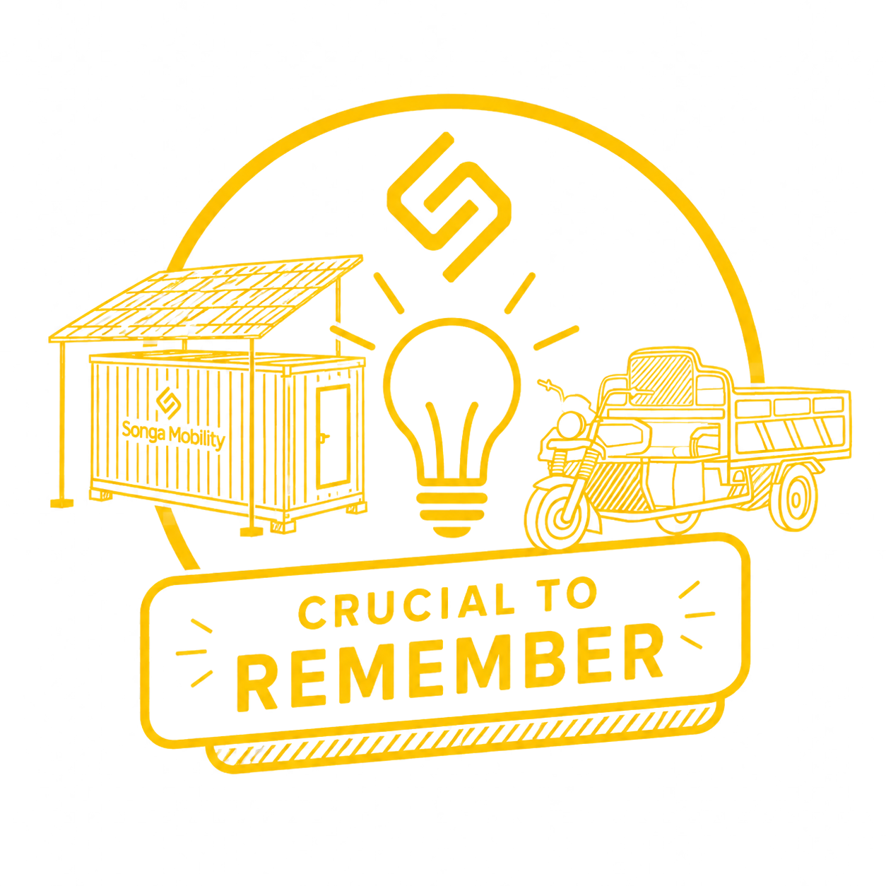
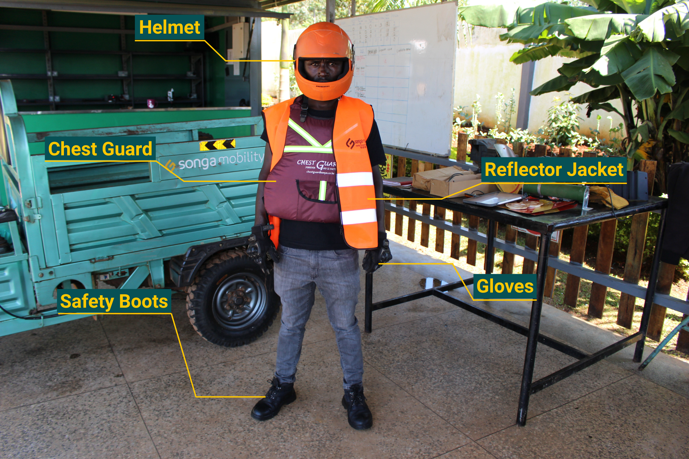
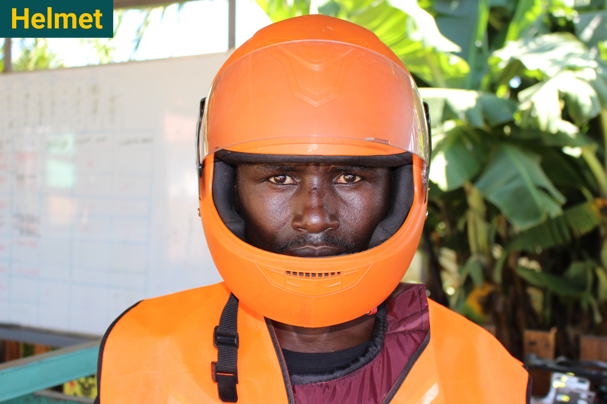
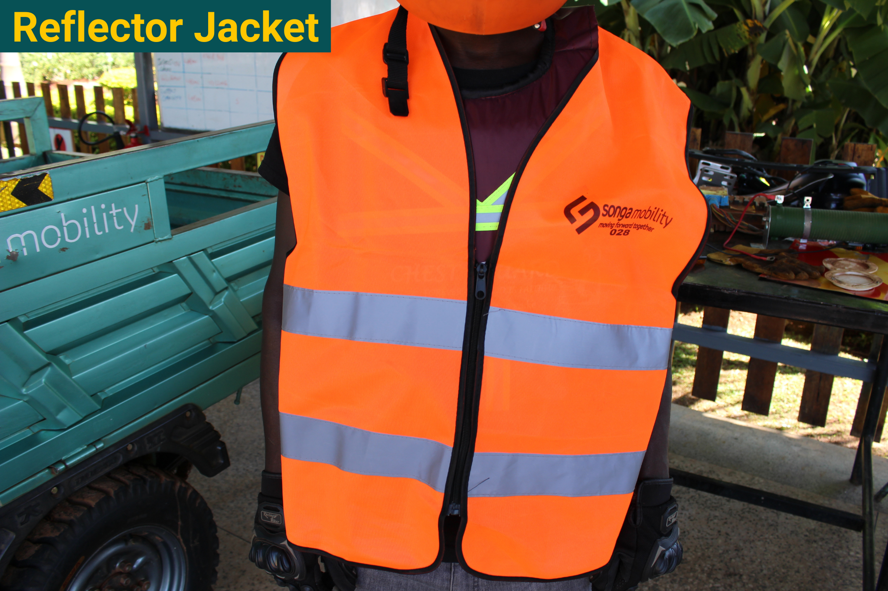
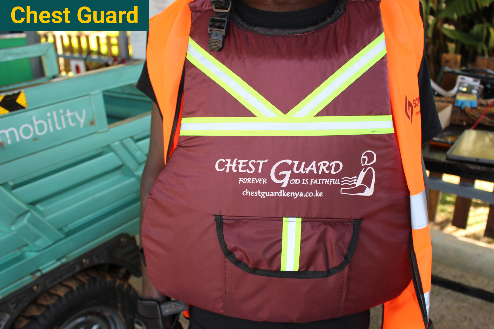
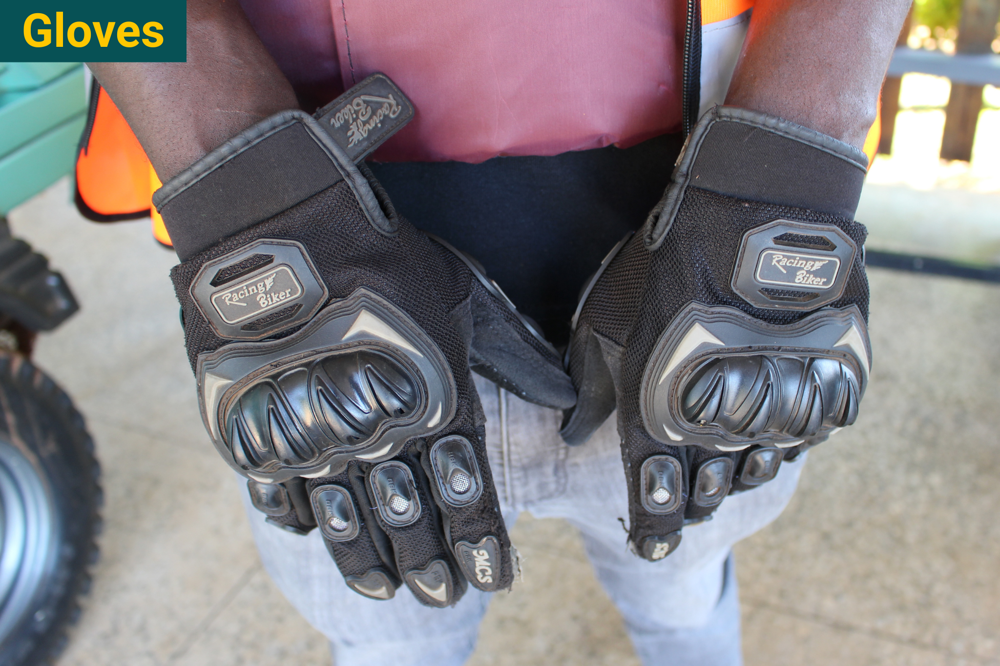
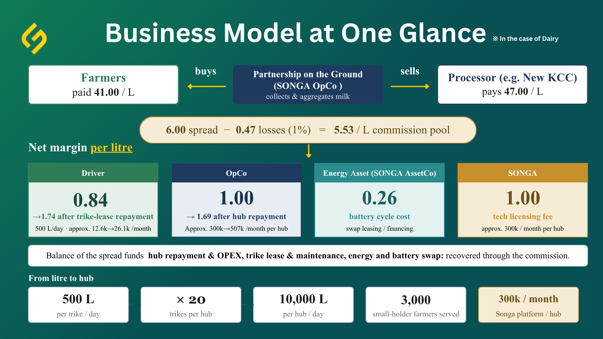
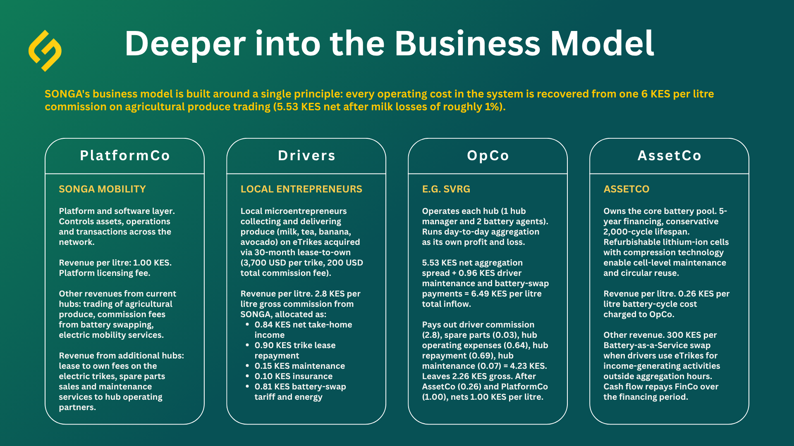

SONGA Mobility Training Package
Each trainee completes one module specific to their role and an assessment. A score of 95% or above earns a Certificate of Completion.


SONGA's Mission, Impact & Values
Before your role-specific module, understand why SONGA exists, who depends on you, and the impact you are part of.
My Profile
View and edit your trainee information, role assignment, and training progress at a glance.
Profile Information
Training Summary
SONGA's Mission, Impact & Values
Every role at SONGA completes this module. Before you learn your specific job, understand why SONGA exists, who depends on you, and the impact you are part of.
Every task you do connects to a farmer who depends on this system to make a living.
From swapping a battery to managing a hub, your work keeps milk moving, incomes flowing, and communities growing.
00. Programme Overview
This programme gives every trainee — whatever their role — a shared understanding of why SONGA exists, who depends on the work you do, and the impact you are part of. The remaining sections walk through the problem we are solving, what SONGA deploys, the associated challenges, and the measurable impact achieved so far.
- 01. Primary Problem You are Tackling with SONGA
- 02. Deeper into the Problem
- 03. What SONGA Deploys
- 04. Associated Challenges
- 05. Our Impact
- 06. Assessment
By the end of this module you will be able to explain, in plain language: the core problem SONGA tackles for smallholder farmers, why dairy is the starting point, what SONGA deploys as infrastructure, the wider challenges the platform addresses (women, youth, food security, environment), and the impact achieved across farmers, women, youth, and emissions.
01. Primary Problem You are Tackling with SONGA
Across Sub-Saharan Africa, smallholder farmers are the backbone of food production.
However, smallholder farmers in Africa face a major challenge: the lack of reliable first-mile logistics and market access for the 70% of the population engaged in farming.
This leads to massive post-harvest losses and limited value addition.
Songa's ecosystem is designed primarily to address this challenge. We solve the problem by providing reliable and efficient aggregation logistics to Sub-Saharan Africa.
SONGA's responsibility is first and foremost to the farmers and the communities we serve. Everything flows from that. The trikes, the hubs, the batteries, the software — these are tools. The purpose of those tools is to give smallholder farmers reliable access to the market. That is the backbone of what we do, and every person in the SONGA ecosystem needs to carry that understanding into their daily work.

A significant share of the food produced in developing countries gets lost along the supply chain, before it reaches the market. This is true for all agricultural commodities — fruit and vegetables, grains and pulses, meat and dairy, fish and animal products. In Sub-Saharan Africa, food losses account roughly to 120–170 kg/year per capita (FAO 2011, 5) — almost half a kg / day.
This is especially true in the dairy sector. Millions of small-scale dairy farmers produce milk every day, but without dependable transport, much of it never reaches a buyer. Milk spoils. Income is lost. Communities stay trapped in poverty. The post-harvest loss rate for milk runs around 30%.
Indeed, Africa imported $7.5 billion of milk products in 2023, limiting the value addition of smallholder farmers and their economic opportunities.
The dairy industry in Africa has historically been built around powdered milk imported from developed economies. This model is not sustainable. Africa's population is projected to reach 2.5 billion by 2050 — you cannot feed that many people on imported powder. The continent needs to collect and process milk locally, at scale.
Even Kenya, the second-largest milk producer in Africa, is not self-sufficient. Consumption per capita is growing, and the gap between production and demand will only widen. This same pattern repeats across the continent.
02. Deeper into the Problem
Massive post-harvest losses, a grave problem in themselves, prevent farmers from capturing their full income potential and limit value addition of the entire agricultural community. Poor aggregation logistics leads to spoilage and quality loss of agricultural produce, which in turn discourages farmers and processors from investing to reduce losses and improve productivity.
Our business breaks this loop and creates a virtuous cycle of continuous improvement and shared gains. To date, our platform supports farmers and value-chain players in four value chains (dairy, banana/matoke, horticulture, organic waste), and our most developed intervention is milk aggregation. We are currently one of the largest milk and banana off-takers in Kisii.
Cold storage at Agri-E-Hubs, same-day aggregation, and optimized e-trike routes shorten the field-to-hub window for temperature-sensitive chains (e.g. milk). Digital weighing, moisture checks, and traceability improve quality assurance and reduce buyer rejections. Coordinated pickup windows aligned to processor schedules further cut spoilage and stabilize procurement.
By extending the shelf life and quality of perishable produce, SONGA reduces food losses and waste, which are estimated to be 30–50% of total production in Sub-Saharan Africa.
At the Agri-E-Hubs, SONGA enables aggregation, grading, chilling, and basic processing, while bundling input delivery. Transparent pricing, digital receipts and payments, and above all, improved market access help farmers capture more value and plan production.
SONGA strengthens local value chains and embeds farmer producers into the value chains, enabling them to operate their farms like businesses. Assured markets will also lower barriers to finance.
03. What SONGA Deploys
SONGA is not just a transport company. SONGA deploys infrastructure: electrical infrastructure, energy infrastructure, and electric mobility infrastructure. The electric trikes, batteries, charging hubs, and digital systems together form a platform. Milk collection sustains this platform, but the platform in turn sustains much more — it gives rural communities access to reliable, clean transport for the first time, opening the door to economic activity beyond dairy alone.
The SONGA platform exists for three reasons:
Economic viability
The platform optimizes the use of assets (vehicles, batteries, chargers) so the operation can sustain itself financially. Without economic viability, there is no sustainability. Without sustainability, we are making promises we cannot keep.
Systematization
SONGA is not here to support two or three farms. The platform allows the model to be replicated and scaled across regions and countries. Systematization is what turns a local project into a lasting solution.
Traceability, control & trust
Every transaction, every trip, every battery swap is tracked. Without integrity in the system, we cannot guarantee the model is truly working for everyone. Trust is what holds the whole ecosystem together.
SONGA operates on a simple but powerful principle: everyone in the ecosystem must benefit fairly. Farmers win because their milk reaches the market reliably, and they earn a stable income. Drivers win because they have access to affordable, clean vehicles and a predictable route. Off-takers (dairy cooperatives, processors) win because they receive a consistent supply of fresh milk. The community wins because it gains infrastructure, jobs, and economic growth.
Reliable market access
Their milk reaches the market reliably, and they earn a stable income.
Clean, affordable vehicles
Access to affordable, clean vehicles and a predictable route.
Consistent supply
Dairy cooperatives and processors receive a consistent supply of fresh milk.
Jobs & growth
The community gains infrastructure, jobs, and economic growth.
Your role, whatever it is, exists to keep this cycle turning. Every task you do, from swapping a battery to managing a hub, is connected to a farmer who depends on this system to make a living.
04. Associated Challenges
The main problem SONGA tackles is the lack of logistics infrastructure to scale agricultural value chains in the region. Although our responsibility lies first and foremost with the local farmers, our challenge simultaneously addresses four interconnected challenges in East Africa: massive post-harvest losses, limited value addition by farmers, lack of economic opportunities for women and youth, and food insecurity.
SONGA Mobility is deeply committed to advancing gender equality.
Primarily, the project creates opportunities for women in various roles, including driving, technical positions, and management. SONGA's recruitment drives will focus on hiring women, particularly for driving the gender-neutral e-trikes, breaking traditional gender barriers in transportation roles.
SONGA also offers training programs designed for women. This includes subsidizing cost for women to acquire a driver's license, while we will, at cost, provide technical training for battery assembly and management. As many women engage in home agri-business with no access to the market, the project will facilitate market access for women-led agribusinesses, providing them with reliable transportation for their products. This will allow them to focus more on their businesses and expand as micro-entrepreneurs.
SONGA ensures that all our facilities and operations are safe and inclusive for women. This includes implementing strict anti-harassment policies and creating women-friendly workspaces. Women are also included in decision-making processes at all levels of the project, ensuring their perspectives and needs are considered in project planning and execution.
Gender-disaggregated data will be collected and analyzed to monitor the project's impact on women. KPIs will include the number of women employed, the number of women-led businesses supported, and the increase in income levels among women beneficiaries.
SONGA Mobility provides exciting job opportunities for youth.
SONGA actively deploys youth as e-trike drivers, battery technicians, data assistants, and hub managers.
They have been trained to execute their jobs. Such training programs include e-mobility maintenance, renewable energy systems, and business management, tailored to young people. This approach helps to address unemployment among youth and equips them with skills for the future.
In addition to the job and training opportunities created within our platform, SONGA provides further economic opportunities for youth in rural areas by improving their access to markets.
Food security consists of four pillars: food availability, food access, food utilization, and stability. Our solution contributes to each.
Availability
Solar-powered Agri-E-Hubs, cold storage, and routed E3Ws move produce quickly from farms to markets, cutting post-harvest losses and increasing safe, marketable volumes.
Access
Reliable first/last-mile logistics lower delivered costs for offtakers and raise farmer incomes through timely pickups and transparent payments, improving households' ability to purchase food.
Utilization
Cold-chain handling, digital weighing/moisture checks, and hygienic aggregation at Agri-E-Hubs preserve quality and safety — especially for milk and tea — supporting better nutrition outcomes.
Stability
Dual-shift, multi-crop routes (e.g., milk in the morning, tea in the afternoon), renewable energy at Agri-E-Hubs that buffers fuel-price shocks, and data-driven dispatch smooth seasonal volatility and sustain supply during climate and market disruptions.
Fossil-fuel logistics drive rural emissions, heighten exposure to fuel-price shocks, and, through redundant trips and ad hoc routing, raise costs and climate impacts. For example, waste in cold-sensitive chains like milk adds methane. Smallholders outside structured value chains are less resilient. Inclusive, climate-aware models — contract farming, quality-controlled aggregation, and digital traceability — improve market access, steady incomes, and adaptive capacity.
Songa Mobility deploys solar-powered Agri-E-Hubs for off-grid charging of E3Ws serving rural value chains, cutting emissions and fuel-price exposure. Compression-assembled Li-ion packs with a smart BMS enable cell-level replacement for longer life and circularity; optimized routing reduces redundant trips, lowering carbon per kilogram while reducing noise and air pollution.
Our platform clusters farmers and suppliers into connected nodes, embedding smallholders in value chains to boost resilience. We maximize E3W utilization by prioritizing high-volume/high-value cargo, linking actors to adaptation tools (regenerative practices, waste up-cycling, climate insurance), and scaling through an analytics-driven platform that de-risks replication.
05. Our Impact
Data collection on impact for chronic food insecurity is currently under preparation. However, since all four sub-problems are interconnected in one way or another, the following data serve as testaments for positive impacts on the four pillars brought by SONGA Mobility.
The qualitative impacts are based on the SONGA Mobility Impact Performance Report by 60 Decibels, a social impact measurement company. The report is based on phone interviews with 279 milk, avocado and banana farmers in Kenya, conducted by 60 Decibels trained researchers. Therefore the impacts revealed here are primarily related to the issue of limited value addition. However, the interconnectedness of the four sub-problems makes these findings broadly indicative.
- Farmers are heavily dependent on SONGA Mobility for market access, with limited viable alternatives.
- Songa Mobility is enabling better farm and quality-of-life outcomes for most farmers.
- Despite Songa Mobility's strong economic impact, delayed and inconsistent payments are weakening customer satisfaction.
- Farmers continue to trust and rely on Songa Mobility, despite operational challenges.
- Training is highly valued, but limited resources hinder full application.
Quality-of-life improvements are primarily due to improved ability to afford household items, children's education, and savings. Farming improvements are driven by higher-quality feeds, better veterinary care, and stronger financial planning. Income gains are primarily driven by higher volumes of produce sold.
06. Assessment
[Assessment content to be added.]
Bibliography
- Awiti, Alex, & Scott, Bruce. 2016. "The East Africa Youth Survey Report." East African Institute. ecommons.aku.edu/eastafrica_eai/20
- FAO. 2011. Global Food Losses and Food Waste: Extent, Causes, and Prevention. Rome. fao.org/4/mb060e/mb060e.pdf
- FAO. 2025. World Food and Agriculture – Statistical Yearbook 2025. Rome. doi.org/10.4060/cd4313en
- FAO & OECD. 2016. "Agriculture in Sub-Saharan Africa: Prospects and challenges for the next decade," in OECD-FAO Agricultural Outlook 2016–2025. Paris.
- Gathii, Lucy; Jhamb, Anshika; Magak, Millicent; Singh, Tripti; & Waitathu, John. 2025. "Songa Mobility Impact Performance Report." 60_Decibels.
- Goedde, Lutz; Ooko-Ombaka, Amandla; & Paris, Gillian. 2019. "Winning in Africa's agricultural market." McKinsey, February 15. mckinsey.com
- Zereyesus, Y. A.; Cardell, L.; Farris, J.; Ajewole, K.; Johnson, M. E.; Lin, J.; Valdes, C.; & Zeng, W. (U.S. Department of Agriculture, Economic Research Service). 2025. "Global food assessment, 2025–35," Global Food Assessment. Report No. GFA-36.
Drivers
Operational training for SONGA drivers — covering role, conduct, e-trike operation, route execution, documentation, incident response, and discipline.
00. Programme Overview
- This programme prepares you to operate safely, collect accurately, and represent SONGA professionally.
- The training is hands-on first and requires your proactive learning on the field.
- Drivers must complete a mandatory 21 days of training with SONGA before commencing work.
- You will be assessed at Day 16 (driving skills) and at Day 21 (full certification). Only certified drivers operate on SONGA routes.
- General Structure and Instructions
- 01. Your Role as a SONGA Driver
- 02. Onboarding & Qualifications
- 03. Personal Protective Equipment
- 04. The E-Trike: Operation & Daily Care
- 05. Pre-Trip Inspection
- 06. Rules of the Road & Driving Conditions
- 07. Route Operations & Dairy Aggregation
- 08. Parking, Loading & Unloading
- 09. Documentation & the Songa App
- 10. Incident Response & Reporting
- 11. Company Assets, Conduct & Discipline
- 12. Assessment
01. Your Role as a SONGA Driver

As a Driver, you are the direct link between the farmer and the market. Every morning, when you ride your trike to collect milk, you are the person the farmer depends on. If you do not show up, their milk does not move. Their income for the day is lost.
Your mission is to complete your collection route reliably, safely, and with respect for every farmer and community member you interact with. You are not just transporting milk. You are delivering a promise that SONGA made to these farmers: that their product will reach the market, every day, without fail.
Your Purpose Statement
"Every trip I complete connects a rural community to the clean, reliable transport that makes their livelihoods possible."
What this means every day
You are the first person a farmer sees every morning. Your punctuality, your care with their produce, and your accuracy in the app are what the farmer experiences as 'Songa'. For many farmers, you are the only Songa representative they will ever meet. Your conduct is the brand.
How your role connects to the mission
The mission says Songa connects 'clean transport, cold chain, and market access'. You are the clean transport. Without your route running reliably every day, none of the rest of the ecosystem functions. The trike, the battery, the hub — all of these exist because daily collection makes them economically viable.
Remember this
When a farmer receives payment because you recorded their milk accurately, that is the mission working. When you show up on time, every day, you are building the trust that the entire value chain depends on.
- The opening line of your daily dispatch log
- The first slide of your onboarding training
- The 'why this matters' scene at the end of DV-07-01 and DV-10-01
You are part of a virtuous cycle. Farmers trust you with their product. Off-takers trust you to deliver on time. SONGA trusts you with the vehicle and the route. In return, you earn a fair and predictable income. This balance only works if every player does their part honestly. If you cut corners, overcharge, or skip stops, the trust breaks and the whole system suffers.
The trike you ride, the battery that powers it, the hub where you start your day: all of these exist because of the daily milk collection that you perform. Your route is the engine that keeps the platform alive. Understand that, and you understand your value.
For many farmers, you are the only SONGA representative they will ever meet. Your professionalism, your punctuality, and your accuracy are what the farmer experiences every single day. Your conduct is the brand.
SONGA drivers handle mainly dairy aggregation, but also aggregation of other produce such as banana, avocado, cassava, etc., depending on the region.
You are responsible for safe operation of the e-trike, accurate data collection via the SONGA App, respectful interaction with farmers, and compliance with all SOPs and safety protocols.
You are also authorised to conduct rental operations, provided that they are carried out under the same conditions as those applicable to aggregation operations.

As a driver, your main responsibility is to operate the e-trike safely and professionally while supporting the aggregation of dairy and other value chain products from farmers along assigned routes.
Your responsibilities include, but are not limited to:
- Complete onboarding and comply with all operational guidelines, SOPs, and required documentation.
- Operate the e-trike safely and responsibly at all times.
- Follow assigned routes for the aggregation of dairy and other value chain products from farmers.
- In the case of dairy aggregation, conduct milk quality checks during aggregation and accurately record the results.
- Collect and submit accurate operational data through the Songa App in a timely manner.
- Submit all aggregation receipts to the Hub Manager.
- Ensure proper handling and transportation of value chain products.
- Maintain vehicle cleanliness and report any defects, incidents, or operational issues immediately.
- Interact respectfully and professionally with farmers, customers, and community members.
Drivers are not authorised to:
- Assign, reassign, or reissue receipts to themselves or other drivers.
- Handle batteries beyond battery swapping during trips.
- Log battery-related activities, unless specifically authorised.
- Engage in charging, maintenance, or workshop duties unless assigned by the Hub Manager.
02. Onboarding & Qualifications
Before any driving begins, you must complete the recruitment process. The driver submits the following documents:
- National ID
- Valid driver's license: A3 category, which is the required permit for operating a three-wheeler
- Certificate of Good Conduct
- Emergency contact details
- Food handling certificate (for drivers handling milk and other produce)
- Signed service agreement outlining the terms of service, duties, and conduct expectations
Human Resources and the Hub Manager verify the documents and record the driver's information in the ERP system.
- At least 1 year of proven experience in driving vehicles, preferably commercial vehicles
- Experience with electric vehicles or e-mobility operations is an advantage
- Must pass a medical examination to prove physical fitness for the role, including vision and hearing tests
- Ability to lift and handle batteries and other equipment associated with the trike
Drivers must undergo mandatory training on e-trike operation, road safety, and customer service before commencing work. This is a mandatory 21 days of training with SONGA. Drivers must also sign all SONGA SOPs (Milk aggregation, D&I, Banana aggregation, and Mobility) during onboarding.
03. Personal Protective Equipment (PPE)

Drivers must wear helmets, reflector jackets, and safety boots at all times while on the trike and while at the designated place of work (hub/workshop). No personal protective equipment, no dispatch. This is enforced daily at hubs.
Drivers must wear protective gear, such as gloves, chest guard, and jackets, to enhance safety.




E-trikes should have adequate lighting, reflectors, and mirrors to ensure high visibility on the road.
- Drivers must wear the required PPE at all times while operating the e-trike or working at the hub/workshop.
- Required PPE includes helmets, reflector jackets, safety boots, gloves, chest guards, and protective jackets.
- No driver should be dispatched without the required PPE.
- PPE compliance must be checked and enforced daily at the hubs.
- E-trikes must have functioning lights, reflectors, and mirrors to ensure visibility and road safety.
04. The E-Trike: Operation & Daily Care
The electric three-wheeler (e-trike) is your primary tool. It is battery-powered, quiet, and designed for rural terrain and produce transport.


One is not permitted to repair these components. However, you need to know how to operate the vehicle correctly and recognise when something is wrong.
E-trikes are heavier, wider, and handle differently from motorbikes. The centre of gravity shifts with cargo load. Braking distance is longer, especially when loaded. Cornering requires wider turns. Speed is electronically limited.
Check battery state of charge (SOC) before departure (minimum 20%). If the trike feels sluggish, the SOC drops unusually fast, or the battery feels hot, stop and report. Never attempt to force a connection or charge a battery yourself.
Drivers are responsible for maintaining the cleanliness and basic condition of the trikes assigned to them during their period of use. The driver must clean the trike after completing daily operations and before handing it back to the hub. This includes:
- Removing mud, dirt, milk spills, or debris from the trike body and cargo area
- Ensuring the cargo section is clean and suitable for transporting produce
- Ensuring the trike is returned in a clean and orderly condition for the next operational use
Drivers must complete this cleaning before signing off for the day or leaving the hub. Failure to maintain basic cleanliness or repeated refusal to clean the trike after use will be treated as non-compliance with operational procedures.
- The e-trike is the driver's main tool for rural produce transport. It is battery-powered, designed for rural terrain, and has a 72V 51Ah lithium-ion battery, three gears, and a maximum load capacity of 500 kg.
- Drivers must operate the e-trike correctly and recognise signs of malfunction, but they are not authorised to repair the vehicle or its components.
- E-trikes handle differently from motorbikes because they are heavier, wider, and more affected by cargo load. Drivers must allow longer braking distances, take wider turns, and operate within the electronically limited speed.
- Drivers must check the battery state of charge before departure. The battery must be at least 20%, and any unusual issue such as sluggish performance, fast battery drain, overheating, or connection problems must be reported immediately.
- Drivers must never force a battery connection or attempt to charge or repair the battery themselves.
- Drivers are responsible for keeping the assigned e-trike clean during use and must clean it after daily operations before handing it back to the hub.
- Cleaning includes removing mud, dirt, spills, and debris from the trike body and cargo area, ensuring the vehicle is ready for safe and hygienic use by the next driver.
- Failure or repeated refusal to clean the trike will be treated as non-compliance with operational procedures.
05. Pre-Trip Inspection
The pre-trip inspection is the first line of defence against breakdowns, accidents, and compliance violations. The trikes should undergo daily routine inspections to ensure they are in safe working condition. Ensure that the trike being driven is roadworthy before starting a journey.
Each driver must perform and demonstrate all 14 inspection items before departure. The inspection covers:
- General vehicle condition: walk around the full trike, look for cracks, dents, or loose panels
- Tyres: check pressure, look for cuts, bulges, or embedded objects
- Lights: confirm all lights are functional
- Mirrors: clean and properly adjusted
- Brakes: test engagement and release
- Horn: functional
- Battery SOC: check via Songa App, minimum 20% before departure
- Anderson connector: push firmly until click, confirm secure
- Cargo area: clean, no residue from previous load
- Straps and securing tools: present and functional
- Fire extinguisher: present and charged
- PPE: helmet, reflector jacket, safety boots, gloves
- Documents: valid licence, insurance sticker, county sticker
- Songa App: open, logged in, GPS active
When you sign the dispatch log, you are confirming all 14 items are checked. This is your commitment to safety and your accountability. Every trip, every time.
- Drivers must complete a pre-trip inspection before every journey to prevent breakdowns, accidents, and compliance issues.
- The driver is responsible for confirming that the e-trike is roadworthy before departure.
- The inspection must cover all key safety and operational items, including vehicle condition, tyres, lights, mirrors, brakes, horn, battery SOC, connector, cargo area, securing tools, fire extinguisher, PPE, documents, and Songa App readiness.
- Battery SOC must be checked through the Songa App and must be at least 20% before departure.
- The Anderson connector must be securely pushed in until it clicks.
- The cargo area must be clean, and all straps or securing tools must be available and functional.
- Drivers must have all required PPE and valid documents before dispatch.
- By signing the dispatch log, the driver confirms that all 14 inspection items have been checked and accepts responsibility for safety and compliance.
06. Rules of the Road & Driving Conditions
- Drivers must obey all traffic laws and regulations, including respecting the right of way, obeying traffic signals, and following speed limits
- Drivers must ensure the trike has a valid insurance sticker as well as county stickers for the areas of operation
- Drivers must refrain from using mobile devices or engaging in any distracted driving activities
- Driving under the influence of alcohol, illegal drugs, or prescription medication that impairs judgment is strictly prohibited
SONGA recommends an upper speed limit of 40 km/h for general operation, with speeds reduced to below 30 km/h when navigating corners or driving on muddy roads for enhanced safety. Overspeeding will be monitored electronically and through field checks. Repeated offenses will be treated as gross misconduct.
Heavy downpour. Reduce speed to under 20 km/h, maintain a safe distance, use lights/wipers, and avoid flooded areas to ensure control and visibility.
Dangerous and slippery roads. Drive slowly, stay alert, and avoid distractions on dangerous or winding roads; use low gear when descending steep slopes.
Difficult terrain. Avoid forcing the trike through difficult terrain to prevent controller damage, cargo spills (e.g., milk), or potential overturning.
- Drivers must obey all traffic laws, road signs, signals, right-of-way rules, and speed limits at all times.
- The e-trike must not be dispatched unless it has valid insurance and county stickers for the relevant operating areas.
- Mobile phone use, distracted driving, and driving under the influence of alcohol, drugs, or impairing medication are strictly prohibited.
- The recommended maximum speed is 40 km/h, reduced to below 30 km/h on corners or muddy roads, and below 20 km/h during heavy rain.
- Drivers must adjust their driving to road and weather conditions by slowing down, maintaining safe distance, using lights/wipers, and avoiding flooded or unsafe terrain.
- Overspeeding and repeated unsafe driving will be monitored and treated as serious misconduct.
07. Route Operations & Dairy Aggregation
During training, drivers are introduced to designated routes for dairy, banana, and avocado aggregation. You are assigned a supervisor or senior driver for shadowing on real trips. Key collection points, offloading zones, and KSC partner sites are mapped out. You learn the standard loading and offloading procedures.
- Ensure all tests are carried out during milk aggregation
- Ensure milk loss is less than 1%
- Ensure milk is recorded in time using the Songa App
- Drivers should treat farmers with respect and courtesy at all times. Listen to farmers' concerns and address them professionally
- Read and sign the Dairy Aggregation Guide
- Arrive at each collection point in the agreed sequence.
- Greet the farmer respectfully.
- Before accepting any milk, inspect the container. Is it clean? No cracks, rust, or residue? If anything is wrong, you must refuse and log it immediately.
- Measure accurately using the calibrated measure. Never estimate. Open the Songa App at the farm gate, not back at the hub. Enter the farmer's name, quantity, confirm the GPS tag, and save.
Sometimes you must refuse a collection for suspected adulteration, dirty containers, or quality issues. Handle it calmly and respectfully. Open the app, select 'Refused Collection', choose the reason, and save. Notify the Hub Manager. The system records everything. The farmer is not penalised unfairly, and you are protected.
All aggregation data must be submitted upon collection. Three late submissions in a month triggers a formal review. Trikes must be brought back to the hub after aggregation within 4 hours of release for milk aggregation, and any other activity by 5:00 PM unless otherwise communicated to the Hub Manager.
- The same general operating principles apply to all produce aggregation, including milk, bananas, avocados, and other value chains.
- During training, drivers must become familiar with assigned routes, collection points, offloading zones, KSC partner sites, and standard loading/offloading procedures. Drivers may shadow a supervisor or senior driver during real trips.
- For milk aggregation, drivers must complete all required quality tests, keep milk loss below 1%, record collections immediately in the Songa App, and follow the Dairy Aggregation Guide.
- At each collection point, drivers must arrive in the agreed sequence, greet the farmer respectfully, inspect the milk container, and refuse collection if the container is dirty, cracked, rusty, or has residue.
- Milk quantities must be measured accurately using a calibrated measure. Drivers must never estimate quantities.
- Collection data must be entered in the Songa App at the farm gate, not later at the hub. This includes the farmer's name, quantity collected, GPS tag confirmation, and submission.
- If milk must be refused due to suspected adulteration, dirty containers, or quality issues, the driver must remain calm and respectful, record the refusal in the app, select the reason, save it, and notify the Hub Manager.
- All aggregation data must be submitted at the time of collection. Three late submissions in one month will trigger a formal review.
- For milk aggregation, trikes must return to the hub within 4 hours of release. For other activities, trikes must return by 5:00 PM unless otherwise agreed with the Hub Manager.
- Drivers must treat farmers with respect and courtesy at all times, listen to concerns, and respond professionally.
08. Parking, Loading & Unloading
- The trikes should be parked in designated areas and should not obstruct traffic or pedestrian pathways
- Ensure the trike is parked on a flat, stable surface with the parking brake engaged
- Distribute the load evenly to maintain balance and stability during transit
- Avoid overloading by adhering to the trike's weight capacity limits: SONGA recommended max 500 kgs
- Secure goods using straps, nets, or other fastening tools to prevent movement during transport
- Cargo should not obstruct the driver's view
- Park the trike securely and engage the parking brake
- Carefully untie or release the securing tools to avoid goods falling or being damaged
- Wear gloves and other appropriate protective gear when handling goods
- Avoid standing on the trike or under elevated loads during loading and unloading
- Inspect the cargo area for any leftover items or debris
- Report any damage to goods, equipment, or the trike immediately
- Clean the trike after use
Before removing a battery, confirm the trike is powered off and the key is removed. Never disconnect a battery while the system is still active. Check the battery you are removing for visible damage, unusual heat, or swelling. If anything looks abnormal, set it aside and report it.
When installing a charged battery, inspect the connectors on both the battery and the trike for bent pins, corrosion, dirt, or moisture. Ensure the battery is seated firmly and the connection is secure. A loose connection causes resistance, which creates heat and damages both the battery and the trike's wiring over time.
Handle batteries with both hands. Never drop, drag, or stack them. Impact stress weakens internal cell connections even when there is no visible damage.
Record each swap in ERPNext: which battery was removed, which one was installed, the trike ID, the time, and any observations.
- Park the e-trike only in designated areas, without blocking traffic or pedestrian pathways.
- Always park on a flat, stable surface and engage the parking brake before loading or unloading.
- Load goods evenly to maintain balance and stability, and do not exceed SONGA's recommended maximum load of 500 kg.
- Secure all goods with straps, nets, or other fastening tools to prevent movement during transport.
- Ensure cargo does not obstruct the driver's view.
- During unloading, release straps and securing tools carefully to prevent goods from falling or being damaged.
- Wear gloves and appropriate protective gear when handling goods.
- Do not stand on the trike or under elevated loads during loading or unloading.
- After operations, inspect the cargo area, remove leftover items or debris, report any damage immediately, and clean the trike.
09. Documentation & the Songa App
Documentation is part of your job, not extra work. Every collection, every trip, every incident must be logged in the Songa App. Without accurate records, farmers do not get paid correctly, routes cannot be optimised, and problems cannot be tracked.
Accurate data protects you. If a farmer disputes a collection quantity, the Songa record is the evidence. If an incident occurs on route, your logged report is your accountability. Drivers who document accurately are trusted more and protected better.
Late or missing entries create problems for the entire operation. The Hub Manager cannot reconcile daily numbers. The accountant cannot process payments. The farmer loses confidence in the system.
- Every collection: farmer name, quantity, quality check result, GPS location, timestamp
- Every trip: departure time, return time, route taken, battery SOC at departure and return
- Every incident: type, location, description, photos where relevant, Hub Manager notified
- Every refusal: reason, farmer notified, logged in app
The Songa App handles dispatch, trip logging, farmer search, collection data entry, GPS tagging, incident reporting, and daily checklists. All drivers should complete all checklists contained on the Songa App before and after activities as required. Entries should be completed in the field as part of the job, not afterward when details are forgotten.
Drivers are required to collect data using an Android device with a version above 10.
- Logging data at the hub instead of at the farm gate.
- Estimating quantities instead of measuring.
- Forgetting to record refusals.
- Skipping logs, writing vague descriptions, and making late entries.
- All of these are avoidable and all of them have consequences.
- Documentation is a core part of the driver's job. Every collection, trip, refusal, and incident must be recorded accurately in the Songa App.
- Accurate records protect drivers, support farmer payments, allow route optimisation, and help the Hub Manager track and resolve operational issues.
- Drivers must record all required details, including farmer name, quantity, quality check result, GPS location, timestamp, trip times, route, battery SOC, incident details, and refusal reasons.
- Songa App entries must be completed in the field at the time of activity, not later at the hub.
- Drivers must complete all required pre-activity and post-activity checklists in the Songa App.
- Drivers must use an Android device with version 10 or above to collect and submit data.
- Common mistakes include logging at the hub instead of the farm gate, estimating quantities, failing to record refusals, skipping logs, writing vague descriptions, and making late entries.
- Late, missing, or inaccurate records create problems for payment processing, daily reconciliation, farmer trust, and driver accountability.
10. Incident Response & Reporting
When an accident happens on route, follow this sequence:
- Step 1: Stop the trike safely and immediately. Switch off the ignition.
- Step 2: Check yourself and anyone else for injuries. If anyone is injured, call 999 or 112 first.
- Step 3: Call the Hub Manager immediately. Do not manage this alone. Do not make statements about who is at fault.
- Step 4: The Hub Manager will contact the local authorities where necessary after consulting management.
- Step 5: Document the accident with photos, descriptions, and the names of the involved parties as per the incident reporting escalation guide.
If your trike loses power or stops: move to the roadside safely. Check the battery indicator on the Songa App. Call the Hub Manager with your GPS location and battery status. Stay with the trike. Do not leave it unattended.
Drivers must promptly report any defects or issues with their e-trikes to the Hub Manager. You are not expected to repair the vehicle yourself. Report it, and the technician will handle the repair.
- Drivers must report accidents or incidents immediately to the Hub Manager
- Contact their supervisor and report in case of an incident immediately
- Seek medical help if needed
- Report every incident before end of day via the Songa platform: silence is never the right response
- Any mechanical issues, delays, or challenges must be reported immediately
- In case of an accident, stop the trike safely, switch off the ignition, check for injuries, and call 999 or 112 immediately if medical help is needed.
- Drivers must contact the Hub Manager or supervisor immediately after any accident, incident, breakdown, delay, mechanical issue, or operational challenge.
- Drivers must not manage accidents alone or make statements about who is at fault.
- The Hub Manager will escalate to management and contact local authorities where necessary.
- All accidents and incidents must be documented with photos, descriptions, location details, and names of involved parties, following the incident reporting escalation guide.
- If the trike breaks down or loses power, move it safely to the roadside, check the battery status in the Songa App, share your GPS location with the Hub Manager, and stay with the trike.
- Drivers must not leave the trike unattended during a breakdown or incident.
- Drivers are not expected or authorised to repair the e-trike themselves; defects must be reported, and repairs must be handled by a technician.
- Every incident must be reported on the Songa platform before the end of the day. Silence or delayed reporting is not acceptable.
11. Company Assets, Conduct & Discipline
Drivers are entrusted with company property, including but not limited to e-trikes, batteries, tools, and accessories assigned for operational duties. These assets must be used only for authorised SONGA activities and handled with care at all times. Complete the company property acknowledgement form.
- Safeguard the trike and related equipment while in your custody
- Ensure the trike is returned to the designated hub after operations as per the trike dispatch and safety SOPs
- Avoid misuse, negligence, or unauthorised use of company equipment
- Report any damage, malfunction, or loss immediately to the Hub Manager
- Unauthorised use of company assets or allowing unauthorised persons to operate a SONGA trike will be treated as serious misconduct
- SONGA collects and uses data to improve service, enhance safety, and innovate
- Data generated during your work as a driver for SONGA belongs to the company
- Drivers are required to collect data using an Android device with a version above 10
- Drivers are expected to comply with all relevant data protection and privacy regulations
- Read and sign the Data SOPs included in the onboarding documents
- I. Drivers must adhere to all posted speed limits and drive at safe speeds for road and weather conditions.
- II. While driving, drivers should not use mobile phones unless hands-free devices are used and it is safe to do so.
- III. Ensure that cargo is loaded securely and within legal weight limits. Cargo should not obstruct the driver's view. SONGA recommended max 500 kgs.
- IV. While on SONGA duties, drivers are only permitted to transport authorized cargo.
- V. Drivers must take regular rest breaks and avoid driving while fatigued. Compliance with hours of service regulations is essential.
- VI. Drivers should comply with all company policies, including but not limited to those related to safety, conduct, and ethics.
- VII. All drivers should complete all checklists contained on the Songa app before and after activities as required.
- VIII. Trikes must be brought back to the hub after aggregation within 4 hours of release for milk aggregation and any other activity by 5:00 PM unless otherwise communicated to the hub manager for planning purposes.
- IX. Only SONGA-trained drivers are supposed to drive the e-trikes.
- X. Drivers are required to communicate directly with their hub manager regarding work-related matters.
- XI. In case of grievances, drivers are supposed to raise concerns with the respective hub manager; if the issues persist, they have the option of escalating to HR as per the grievance procedure.
- XII. Drivers are required to follow lawful and reasonable operational instructions issued by the Hub Manager or designated supervisors, including instructions related to trike cleaning, parking, loading procedures, safety checks, or general hub operations. Refusal to comply with such instructions will be treated as misconduct and may result in disciplinary action.
- SONGA Drivers are assigned work on a six-day work week
- Drivers will be expected to give core hours to tasks assigned by SONGA and also plan for rental/leasing activities during the day (11 AM to 5 PM)
- Drivers are required to comply with lawful and reasonable operational instructions issued by the Hub Manager or other authorised supervisors. Such instructions may include: cleaning and maintaining trikes after daily operations, parking trikes in designated areas, completing operational checklists and reporting requirements, assisting with basic operational tasks related to loading/unloading or organising equipment at the hub, and following safety and operational procedures communicated by management.
- Failure or refusal to follow lawful operational instructions without reasonable justification will be treated as misconduct.
Violations. Violations of this policy, including safety violations, overspeeding, unprofessional behaviour, refusal to relay data in good time, insubordination, food loss beyond 1% of aggregated produce, and breaches of conduct, will be subject to disciplinary action, which may include warnings, suspension, or termination.
Penalties and deductions
- Warnings
- Suspension
- Termination
- Deduction of salary in case the milk loss is above 1% or is rejected due to quality issues
Gross conduct (immediate action)
- Driving under the influence
- Reckless driving
- Theft or fraud
- Violence and criminal offenses
- Repeated safety/maintenance violations
- Refusal to follow instructions
Three-strike rule (non-gross violations)
- First strike → Warning (often verbal or informal coaching)
- Second strike → More serious warning (usually written, possibly with consequences: deduction, suspension, PIP, training)
- Third strike → Further disciplinary action (can include final warning, suspension, or termination)
Drivers have the right to appeal any disciplinary actions taken against them within 7 days. The appeal committee will review documentation, meet with the driver, and reach a decision that is final and binding. The appeal process is conducted with utmost confidentiality.
- Drivers are responsible for company assets, including e-trikes, batteries, tools, and accessories, and must use them only for authorised SONGA activities.
- Drivers must safeguard assigned equipment, return trikes to the designated hub after operations, and immediately report any damage, malfunction, or loss to the Hub Manager.
- Unauthorised use of company assets, or allowing unauthorised persons to operate SONGA trikes, is treated as serious misconduct.
- Data generated during SONGA work belongs to the company, and drivers must follow data protection rules, use an Android device above version 10, and sign the required Data SOPs.
- Drivers must follow all safety, conduct, and operational rules, including speed limits, authorised cargo rules, rest requirements, Songa App checklists, and Hub Manager instructions.
- Trikes must be returned within 4 hours for milk aggregation and by 5:00 PM for other activities unless otherwise communicated to the Hub Manager.
- Drivers work on a six-day work week and are expected to support assigned SONGA tasks as well as rental/leasing activities during the day.
- Failure to follow lawful operational instructions without reasonable justification is treated as misconduct.
- Violations such as safety breaches, overspeeding, unprofessional behaviour, delayed data submission, insubordination, produce loss above 1%, and conduct breaches may lead to warnings, suspension, salary deductions, or termination.
- Gross misconduct includes driving under the influence, reckless driving, theft or fraud, violence or criminal offences, repeated safety/maintenance violations, and refusal to follow instructions.
- Non-gross violations follow a three-strike process: first warning, second more serious warning, and third further disciplinary action.
- Drivers may appeal disciplinary action within 7 days; the appeal committee reviews the case confidentially and makes a final decision.
12. Assessment
Module Assessment
QuizAnswer all 19 questions, drawn from the SONGA Driver Training Curriculum assessment bank. Pass mark: 95% — required for a Certificate of Completion.
- 1What is the maximum company speed limit?
- 2What PPE must be worn at all times while driving?
- 3What does the A3 licence category permit you to drive?
- 4If the battery reaches 15% during a trip, what do you do?
- 5How many pre-trip inspection items must be checked?
- 6Which gear do you use on a steep downhill?
- 7A trike fault is reported using which system?
- 8What is the rated load limit of the GUST 2023?
- 9What is the minimum following distance at 40 km/h?
- 10When should you reduce speed below the company limit?
- 11Before entering a blind corner on a rural road, you should:
- 12Within how many hours must all aggregation data be submitted?
- 13Which phone do you use to record aggregation data?
- 14A farmer's milk looks watery and blue-tinted. What do you do?
- 15Trips must start and end where?
- 16A farmer has a payment complaint. What is your role?
- 17What is the CALM method?
- 18An accident occurs. Who must you call first?
- 19What happens to a driver with 3 overspeeding events in 30 days?
Hub Managers
Operational training for SONGA Hub Managers — overseeing drivers, fleet, commercial activities, farmer engagement, compliance, data, and reporting. As Hub Manager, you are the primary point of coordination between field operations and central management.
00. Programme Overview
This programme prepares you to manage a SONGA operational hub: overseeing drivers, fleet, commercial activities, farmer engagement, compliance, and reporting.
- As Hub Manager, you are the primary point of coordination between field operations (drivers, technicians, battery agents, farmers) and central management.
- The training is structured around practical operational knowledge and your ability to apply SOPs, enforce discipline, and deliver results at the hub level.
- 00. Programme Overview
- 01. Your Role as a Hub Manager (org structure, reporting lines, in-scope/out-of-scope)
- 02. Hub Operations Management (daily ops + hub coordination & time management folded in)
- 03. Driver Supervision and Performance Management (HR management at hub level folded in)
- 04. Hub Commercial Activities Management
- 05. Fleet Management (route operations & quality control folded in)
- 06. Farmer Registration and Engagement
- 07. Data Management and Reporting (digital tools & daily systems folded in as sub-section)
- 08. Compliance and Safety Oversight
- 09. Training and Capacity Building
- 10. Stakeholder and Community Engagement
- 11. Asset and Resource Management
- 12. Budgeting and Accounting Support
- 13. KPIs and Performance Indicators
- 14. Assessment
01. Your Role as a Hub Manager
As a Hub Manager, you are the gatekeeper of SONGA's mission at your hub. You hold the helicopter view. While drivers, battery agents, and technicians each focus on their specific responsibilities, you are the person who sees how all of the pieces connect and ensures they work together.
Your mission has three dimensions:
First, you are the guardian of culture and standards. You set the tone at your hub. You enforce good practices (including 5S workplace organization), ensure that the SONGA vocabulary and values are used correctly, and make sure every team member understands why their work matters. If a battery agent does not understand the virtuous cycle, that is your responsibility to address. If a driver treats farmers poorly, it is your responsibility to correct it.
Second, you are a business operator. You need to understand the SONGA business model in detail: how revenue flows, how costs are managed, how the platform sustains itself. You use tools like ERPNext to track performance and make informed decisions. The hub is only sustainable if it is managed with financial discipline.
Third, you are the bridge between SONGA's headquarters and the people on the ground. You translate the big picture into daily operations. You ensure that the mission is not just a statement on a wall but something that lives in the way your team works every single day.
Your Purpose Statement
"My hub is where rural transformation becomes real — I make it safe, productive, and worth coming back to."
What this means every day
YYou hold the helicopter view. While every other role focuses on their specific task, you see how all the pieces connect. Your hub is not just a dispatch point — it is an Agri-E-Hub: the place where transport, cold chain, feeds, data, and farmer relationships all converge. If the hub works well, farmers trust the system. If it fails, the entire local ecosystem fails.
How your role connects to the mission
The mission says Songa provides 'an integrated ecosystem of solutions'. Your hub IS that ecosystem in physical form. Everything that happens at your hub — from the morning briefing to the final walk-through at 18:00 — is delivering the mission. Hub Managers who understand this don't just manage tasks; they build something.
Remember this
When a farmer leaves your hub having sold their produce, received their payment, and bought inputs for next season — that is the mission complete in one visit. You made that possible.
- The header of your weekly SmartSheet report (sub-heading under your hub name)
- The opening of the HM-00-01 training video
- The first field in your monthly Kaizen review (see Section 13B)
If the hub fails, the entire local ecosystem fails. Drivers cannot operate, batteries are not maintained, farmers are not served. You are the person responsible for making sure that does not happen.
The hub is the operational unit where services are delivered to farmers and the community. Understanding the organisational structure helps you know who to escalate to, who to coordinate with, and where your authority starts and ends.
The Hub Manager is responsible for the overall management and performance of the operational hub, overseeing transportation services, hub-based commercial activities, and community engagement initiatives. The role ensures that drivers, vehicles, rental assets, and hub processes operate efficiently, supporting the organisation's mission of delivering sustainable mobility solutions while enabling community-based economic activities.
In addition to fleet operations, the Hub Manager oversees hub revenue-generating activities, including management of Kilikawi rental services, sale of animal feeds to farmers, and other hub-based commercial services, ensuring proper inventory control, accurate reporting, and strong customer service. The Hub Manager serves as the primary point of coordination between field operations, drivers, technicians, farmers, customers, and central management, ensuring accountability, operational discipline, and financial performance at the hub level.
Diploma or Bachelor's Degree in Business Administration, Operations Management, Transport & Logistics or a related field.
- Demonstrable understanding of OSHA safety regulations and workplace safety standards
- Minimum 3 years experience in operations, logistics, fleet management, or field operations
- Experience managing field teams or drivers is highly preferred
- Proficient in using Android devices for data entry and reporting (Android 8+, 3GB RAM, quality camera)
- Basic computer literacy (Google Sheets, reporting tools)
- Hub Manager: overall hub authority, operations, commercial, compliance
- Technicians: trike inspection, battery verification, connector checks, mechanical fault resolution (05:00–14:00)
- Battery Agents: battery management, tracking, charging coordination, afternoon operational continuity (08:30–17:30)
- Drivers (Service Agents): route operations, dairy/produce aggregation, data collection
- Hub Support Staff (Cleaners): hub premises maintenance
- Hub Manager reports to the Hub Coordinator
- Drivers and Hub Support Staff report directly to the Hub Manager
- Technicians and Battery Agents coordinate with the Hub Manager on daily operations but report through the technical chain
- Serious misconduct is escalated to HR and Operations leadership
- Quality issues are reported to the Hub Coordinator for immediate action
The Hub Manager is responsible for overseeing day-to-day operations across assigned rural hubs, ensuring SOP compliance, managing e-mobility logistics, farmer aggregation, input distribution, and service delivery. The Hub Managers ensure seamless coordination of agricultural value chains, driver supervision, battery swapping systems, and data-backed service efficiency. The main roles could be classified into the following categories:
- Hub Operations Management
- Driver Supervision and Performance Management
- Hub Commercial Activities Management
- Fleet Management
- Farmer Registration and Engagement
- Data Management and Reporting
- Compliance and Safety Oversight
- Training and Capacity Building
- Stakeholder and Community Engagement
- Asset and Resource Management
- Budgeting and Accounting Support
The following sections are structured accordingly.
The following activities are outside the Hub Manager's normal duties. Performing them is only permitted in documented emergencies:
- Driving trikes for milk aggregation: unless it is an emergency that needs their intervention, which has to be escalated immediately. Emergencies allowed include accidents, driver absenteeism, vehicle breakdowns, which require logging/reporting of all emergency substitutions
- Charging, swapping, or rescuing batteries (operational tasks): unless an emergency necessitates their intervention
- The hub is the core operational unit where SONGA delivers services to farmers and the community.
- The Hub Manager is responsible for the overall management, performance, and discipline of the hub, including transport services, commercial activities, and community engagement.
- The Hub Manager ensures that drivers, vehicles, rental assets, hub processes, and revenue-generating activities operate efficiently and in line with SOPs.
- Key commercial responsibilities include Kilikawi rentals, animal feed sales, other hub-based services, inventory control, revenue tracking, reporting, and customer service.
- The Hub Manager is the main coordination point between drivers, technicians, battery agents, farmers, customers, central management, and other SONGA/KSC teams.
- The Hub Manager reports to the Hub Coordinator and directly manages drivers/service agents and hub support staff.
- Technicians and battery agents coordinate with the Hub Manager on daily operations but report through the technical chain.
- Serious misconduct must be escalated to HR and Operations leadership, while quality issues must be reported to the Hub Coordinator for immediate action.
- Core duties include hub operations, driver supervision, commercial activity management, fleet management, farmer engagement, data reporting, compliance, training, stakeholder engagement, asset management, and budgeting/accounting support.
- The Hub Manager should not normally drive trikes for milk aggregation or conduct battery charging, swapping, or rescue tasks, except in documented emergencies.
- Any emergency substitution must be logged immediately and reported to the Hub Coordinator.
- The role requires relevant operations/logistics experience, safety awareness, Android-based reporting skills, and basic computer literacy.
02. Hub Operations Management
This section covers both the recurring operational tasks and the time-based coordination framework that structures your entire day.
Driver Deployment and Hub Oversight
- Oversee daily driver deployment, vehicle allocation, and shift coordination
- Ensure all vehicles are properly checked in and out daily according to company procedures
- Monitor hub activity to ensure efficient fleet utilisation and service delivery
- Maintain order, safety, and cleanliness within the hub premises
Quality Control at Farm Gate and Post-Aggregation
- Support quality control at key points, especially at the farm gate and during post-aggregation handover
- Ensure that milk, vegetables, bananas, and other products meet required standards
- Report all quality issues (spoiled milk, rejected produce, damaged packaging) to the Hub Coordinator for immediate action
Data Collection at Hub Level
- Ensure daily collection and submission of accurate data, including trip logs, battery swaps, scale usage records, and vehicle condition reports via Songa, Smartsheet, etc.
- Ensure adherence to all operational policies and standard operating procedures
Route Expansion
- Identify route expansion opportunities by mapping underserved areas and developing structured plans to integrate them into existing delivery routes
The hub operates from 05:00 to 18:00 hours. Your day is structured around three oversight windows and four mandatory handover checkpoints. Below is how your day flows and what you are responsible for at each stage.
Morning (05:00 – 08:00): Hub Opening and Early Dispatch
- The Technical Team arrives at 05:00 and leads early dispatch: pre-dispatch trike inspection, battery verification, connector checks, and first driver release
- Your role: verify that dispatch is proceeding (remotely or on-site) and coordinate with the security guard and technician on hub opening
- Mandatory Checkpoint at 05:00: Dispatch readiness confirmation signed by the Technician and Security Guard
Core Operations (08:00 – 14:00): Aggregation and Supervision
- From 08:00, you take over as operational lead at the designated hub, aggregation begins
- The Technical Team continues trike supervision and repairs in parallel (08:00–14:00)
- During this window you manage driver deployment, route monitoring, quality control, and data collection
Midday Handover (14:00): Technician to Battery Agent
- At 14:00, the Technical Team prepares a written Technical Handover Report listing: pending repairs, grounded units, and battery issues requiring monitoring
- The handover is signed by the Technician, Battery Agent, and you (the Hub Manager)
- No technician may leave the hub without completing the documented handover
- Your role: receive the report, review pending issues, and confirm accountability transfer to the Battery Agent
Afternoon (14:00 – 17:30): Battery Agent Leads
- The Battery Agent takes over: managing all battery swaps, supervising charging operations, recording late driver technical issues, and escalating mechanical faults to you
- At 17:00–17:30, the Battery Agent submits the Battery Status Report, indicates pending issues, confirms charging units, and identifies unresolved cases
- Mandatory Checkpoint at 17:30: Battery Agent-to-Hub Manager handover signed by Battery Agent and Hub Manager
Evening (17:00 – 18:00): Final Oversight and Close-Out
- Receive the Battery Agent handover and hand over battery charging to the assigned driver
- Supervise any late driver returns
- Confirm the charging area is secured
- Verify workshop closure
- Conduct final walk-through inspection of the hub
- Sign the external guard transition log at 18:00
- You remain the ultimate custodian of hub operations until 18:00 hours
- Mandatory Checkpoint at 18:00: Final security transition confirmation signed by Hub Manager and Guard
Handover Register
- Each hub maintains a physical Handover Register with time-stamped entries
- Records: pending issues, battery status, mechanical faults, driver incidents
- Both outgoing and incoming signatures are required
- Verbal handovers alone are never permitted: every transition must be documented
Summary of Mandatory Checkpoints
- 05:00: Dispatch readiness (Technician + Security Guard)
- 14:00: Tech-to-BA handover (Technician + Battery Agent + Hub Manager)
- 17:30: BA-to-HM handover (Battery Agent + Hub Manager)
- 18:00: Security transition (Hub Manager + Guard)
- The Hub Manager oversees daily hub operations, including driver deployment, vehicle allocation, shift coordination, fleet utilisation, service delivery, and hub cleanliness.
- All vehicles must be properly checked in and out each day according to company procedures.
- The Hub Manager supports quality control at the farm gate and during post-aggregation handover, and must report quality issues immediately to the Hub Coordinator.
- Daily operational data must be accurately collected and submitted through Songa, Smartsheet, and other required systems.
- The Hub Manager should identify route expansion opportunities by mapping underserved areas and planning how to integrate them into existing routes.
- The hub operates from 05:00 to 18:00, with the Hub Manager responsible for overall operational custody until close-out.
- The day is structured around key handover checkpoints: 05:00 dispatch readiness, 14:00 Technician-to-Battery Agent handover, 17:30 Battery Agent-to-Hub Manager handover, and 18:00 security transition.
- All handovers must be documented in the physical Handover Register; verbal handovers alone are not permitted.
03. Driver Supervision and Performance Management
Support the recruitment and onboarding process for new drivers. Ensure all drivers meet compliance standards related to company policies, road safety, and operational procedures for both agricultural and mobility interventions before they begin active duty.
Perform regular audits and spot checks to assess driver adherence to SOPs, route plans, checklist usage, hub protocols, vehicle care procedures, cleaning requirements, safety protocols, and customer service standards.
Conduct daily or weekly briefings to communicate operational updates and expectations. The morning briefing is a critical touchpoint covering PPE checks, route assignments, safety reminders, and any changes to the day's operations.
Monitor driver attendance, punctuality, and conduct across a six-day work week. Drivers must check in with the Hub Manager before and after trips. Trikes must be returned to the hub within 4 hours of release for milk aggregation and by 17:00 for any other activity.
Review and verify driver payroll data before submission. Cross-check attendance records, trip logs, and performance data against payroll entries to ensure accuracy.
Issue corrective action in accordance with HR disciplinary procedures when necessary. Escalate serious misconduct to HR and Operations leadership. Non-gross violations follow a three-strike process: verbal warning, written warning with consequences, then further disciplinary action. Gross misconduct (DUI, reckless driving, theft, violence) may result in immediate action. Drivers have the right to appeal any disciplinary action within 7 days.
SONGA operates on a six-day work week. Hub Manager oversight covers 05:00 to 18:00 per the Hub Coordination and Time Plan. Hub Managers should be flexible to work weekends and public holidays on a rotating basis.
All leave requests must be submitted in advance through the approved system. The Hub Manager approves or escalates requests while ensuring minimum staffing levels are maintained. Leave types include annual leave (accrued progressively, planned to avoid operational disruption), sick leave (medical certificate required after three consecutive days), maternity and paternity leave (per Kenyan employment law and company policy), and compassionate leave (for bereavement or serious family emergencies).
Conduct regular performance reviews for drivers. Set clear expectations, provide feedback, and document all performance conversations and outcomes. Drivers raise concerns with the Hub Manager first. If unresolved, issues are escalated to HR through the grievance procedure. Maintain confidentiality throughout the process.
- The Hub Manager supports driver recruitment and onboarding, ensuring drivers meet company, road safety, and operational compliance standards before starting duty.
- Driver performance must be monitored through audits, spot checks, checklist reviews, route compliance, vehicle care, cleaning standards, safety behaviour, and customer service.
- Daily or weekly briefings should be used to confirm PPE, route assignments, safety reminders, operational updates, and expectations.
- The Hub Manager tracks attendance, punctuality, conduct, check-ins, check-outs, and timely return of trikes.
- Driver payroll data must be verified against attendance records, trip logs, and performance data before submission.
- Corrective action must follow HR procedures, with serious misconduct escalated to HR and Operations leadership.
- Non-gross violations follow a three-strike process, while gross misconduct such as DUI, reckless driving, theft, or violence may require immediate action.
- Drivers may appeal disciplinary action within 7 days.
- The Hub Manager oversees working hours and leave requests while ensuring minimum staffing levels are maintained.
- Regular performance reviews and grievance handling must be documented, fair, and confidential.
04. Hub Commercial Activities Management
- Supervise Kilikawi rental operations, ensuring proper scheduling, usage tracking, and asset care
- Ensure rental equipment is returned in good condition and recorded properly
- Maintain records of rental utilisation, revenue, and customer details
- Proper scheduling and dispatch of rental trikes
- Signed agreements, receipts, and usage logs for every rental
- Update rental dispatch forms daily: Kilikawi updates are a daily recurring task
- Oversee the sale and distribution of animal feeds to farmers from the hub
- Maintain accurate inventory records for feed stock and other hub products
- Animal feeds updates and waste management are daily recurring tasks
- Ensure transparent and accurate recording of transactions, especially for rentals, repairs, and asset servicing
- Traceable documentation for all financial and material flows
- Provide customer support to farmers and rental clients using hub services
- Submit regular reports on hub commercial performance
- Identify opportunities to increase hub revenue through local demand
- Assist in the setup and scaling of Songa models: trike rentals, vegetable and milk aggregation, feed model promotion within the hub's coverage area
- Lead implementation of key Songa interventions
- Support marketing and promotional campaigns, including farmer barazas and local partner engagements, to drive adoption of services
- Work with the hub team to generate local demand, onboard interested users, and ensure consistent messaging on pricing, benefits, and access to Songa services
- The Hub Manager oversees Kilikawi rental operations, including scheduling, dispatch, usage tracking, asset care, signed agreements, receipts, and daily rental records.
- Rental equipment must be returned in good condition, properly recorded, and tracked through daily rental dispatch forms.
- The Hub Manager manages animal feed sales and distribution, including inventory records, daily stock updates, and waste management.
- All revenue and transactions related to rentals, repairs, asset servicing, and hub products must be recorded accurately with traceable documentation.
- The Hub Manager provides customer support to farmers and rental clients and submits regular reports on hub commercial performance.
- The Hub Manager identifies local revenue opportunities and supports the setup and scaling of Songa models, including trike rentals, vegetable and milk aggregation, and feed promotion.
- The Hub Manager supports marketing activities such as farmer barazas and local partner engagement to increase demand, onboard users, and communicate pricing, benefits, and service access clearly.
05. Fleet Management
- Plan, assign, and supervise trike routes to ensure timely, efficient, and cost-effective delivery and pickup of agricultural produce, feeds, and other materials
- Monitor daily route performance: assess efficiency based on distance, time, load, and battery use
- Recommend or implement changes to optimise fuel, battery use, and driver productivity
- Ensure all trikes are operational, clean, safely parked, and properly maintained
- Conduct routine vehicle condition inspections
- Trike Condition Follow-up: daily review of trike status, pending repairs, and grounded units
- Report mechanical issues promptly and coordinate with technicians for repairs
- Monitor vehicle downtime and maintenance scheduling
- Ensure drivers clean vehicles daily where a designated cleaner is not available
- Review daily trike and battery status on the Songa platform
- Confirm battery assignments, check for swap requests, verify charge levels, and flag discrepancies
- This is a core daily task performed every morning
- Monitor and enforce end-of-day trike check-in: all trikes return to hub by 5:00 PM for charging, inspection, and safekeeping
- Trikes must be returned within 4 hours of release for milk aggregation, and by 5:00 PM for any other activity
- Late returns must be documented and reported
- Coordinate trike rentals, including advance requisition planning
- Ensure all trikes are properly documented, assigned, and accompanied by signed agreements, receipts, and usage logs
- Ensure drivers follow correct collection procedures and conduct quality checks
- Ensure data is submitted in the Songa App within required timeframes
- All aggregation data must be submitted within 4 hours of collection
- Three late submissions in a month by any driver triggers formal review
- Target: less than 1% milk loss
- Loss above 1% or rejection due to quality issues may result in deduction from the responsible driver's salary
- Monitor daily loss figures and investigate any spikes immediately
- Plan and monitor trike routes to improve efficiency, battery use, and driver productivity.
- Ensure all trikes are clean, operational, safely parked, inspected, and maintained.
- Review trike and battery status every morning on the Songa platform, including charge levels, swap requests, and issues.
- Enforce return rules: within 4 hours for milk aggregation and by 5:00 PM for all other activities.
- Coordinate trike rentals with proper documentation, agreements, receipts, and usage logs.
- Oversee produce aggregation to ensure correct procedures, quality checks, and timely data submission.
- Keep milk loss below 1%; investigate any losses above this threshold immediately.
06. Farmer Registration and Engagement
- Register new farmers on the designated platform (Songa, ODK) and maintain up-to-date records for all active and inactive farmers
- Issue farmer cards within 24 hours of registration to ensure immediate onboarding into service delivery
- Farmer registration and onboarding is a daily recurring task
- Engage regularly with farmers through one-on-one visits, group discussions, or informal feedback collection to assess satisfaction and evolving needs
- Organise and facilitate farmer meetings to share updates, gather insights, address concerns, and build trust between the hub and the farming community
- Attend to walk-in farmers at the hub who want to access SONGA services
- Ensure all farmer complaints are logged and resolved within the shortest time possible (target: within 24 hours)
- Log complaints on the Songa platform or designated system
- Verify complaint details (e.g. late payment, incorrect quantities, quality disputes)
- Coordinate resolution with relevant teams (D&I, finance, Hub Coordinator)
- Follow up with the farmer to confirm closure and satisfaction
- Handle farmer complaints across hubs where necessary
- Register new farmers on the designated platform and keep records updated for both active and inactive farmers.
- Issue farmer cards within 24 hours of registration to ensure quick onboarding into SONGA services.
- Engage farmers regularly through visits, meetings, group discussions, and feedback collection to understand their needs and build trust.
- Attend to walk-in farmers at the hub and support them in accessing SONGA services.
- Log all farmer complaints in the designated system and aim to resolve them within 24 hours.
- Verify complaint details, coordinate with relevant teams, and follow up with farmers to confirm resolution and satisfaction.
07. Data Management and Reporting
Songa Platform. Trike and battery review/requests, trip creation and dispatch, farmer registration, data entry verification and cleaning, dairy data tracking, ticket resolution.
Zoho. Schedule Updates: update Zoho sheets with trike assignments, staff shifts, and duty roster tracking.
Smartsheet.
- Budget tracker: filling invoices for payment
- Requisition Planner: advance planning for trike rentals, feed orders, consumables
Traccar.
- Mobility tracking: review driver speeds, log overspeeding, monitor route compliance
- Generate Traccar reports for daily oversight
Dashboard Review.
- Review operational dashboards daily for battery charge status, fleet status, trip completion, and performance metrics
- Follow up on dashboard anomalies
Phone Scale/Scale Management. Manage phone-based scale updates for milk aggregation accuracy.
Boya Submission. Submit Boya reports as required by operations.
- Ensure accurate and timely recording of operational data at the hub level
- Trip activity, driver performance, overspeeding reports, vehicle utilisation, maintenance reports
- The Hub Manager is the final quality gate for all data leaving the hub
- Verify the accuracy and integrity of data submitted by drivers or technical staff in the Songa App
- Cross-check against physical observations, handover reports, and dispatch logs: do not accept data at face value
- Songa data cleaning is a daily task: fill in Songa data vs actual receipt verification, correct discrepancies, ensure platform records match reality
- Review and verify dairy aggregation data daily using the dairy data tracking sheet
- Cross-reference Songa App submissions against physical receipts and driver reports
- Use the dairy data ticket tracker to monitor and resolve discrepancies
- Ensure milk dispatch to collection/offtake points is happening on schedule
- Raise Purchase Orders in ERP Next for all hub operations procurements (Hub Consumables, Dairy Consumables, Utilities, hub staff payments)
- Support with Material Issuance in ERP Next
- Create sales invoices for Feeds, battery rentals, and Kilikawi sales
- Create Purchase receipts in ERP Next once stock items are received
- Daily reports: operational summary, incidents, data reconciliation
- Weekly reports: fleet performance, driver compliance, commercial activity
- Monthly reports: comprehensive hub performance to the Hub Coordinator
- Ensure compliance with company data recording SOPs
- The Hub Manager must use and update all required digital systems, including Songa Platform, Zoho, Smartsheet, Traccar, dashboards, phone scale tools, Boya, and ERP Next.
- Daily data tasks include reviewing trike and battery status, dispatch records, farmer registration, trip data, dairy data, ticket resolution, route compliance, and overspeeding reports.
- The Hub Manager is responsible for ensuring that all hub-level data is accurate, timely, and properly verified before submission.
- Songa data cleaning must be done daily by cross-checking app records against receipts, dispatch logs, handover reports, and physical observations.
- Dairy aggregation data must be reviewed daily, checked against receipts and driver reports, and discrepancies must be tracked and resolved.
- ERP Next must be used for purchase orders, material issuance, sales invoices, and purchase receipts related to hub operations.
- Reporting must follow the required cadence: daily operational reports, weekly fleet/compliance/commercial reports, and monthly hub performance reports to the Hub Coordinator.
08. Compliance and Safety Oversight
- Ensure strict adherence by drivers to traffic safety regulations, company operational policies, and fleet safety guidelines
- No PPE, no dispatch: enforce daily at the morning briefing
- Monitor and report incidents such as accidents, overspeeding, and unsafe driver behaviour
- Coordinate accident reporting and investigation procedures
- Report every incident to the Hub Coordinator and Operations leadership
- Review each driver's speeds daily using Traccar reports
- Log details and take action on overspeeding cases
- SONGA upper speed limit: 40 km/h general, below 30 km/h on corners and muddy roads
- Repeated overspeeding offenses are treated as gross misconduct
- Three-strike rule for non-gross violations: warning → written warning with consequences → further action
- Gross misconduct (DUI, reckless driving, theft, violence, repeated safety violations, refusal to follow instructions) → immediate action
- Drivers may appeal disciplinary actions within 7 days
- Ensure 100% of trikes and equipment have valid NTSA and county documents
- Ensure all drivers have valid licences (A3 category), PDL, insurance, and safety gear
- Follow up on county stickers for trikes
- Enforce driver safety rules daily, including traffic regulations, company policies, fleet safety guidelines, and the "no PPE, no dispatch" rule.
- Monitor and report accidents, overspeeding, unsafe driving, and other incidents to the Hub Coordinator and Operations leadership.
- Review Traccar reports daily to track driver speed, route compliance, and overspeeding cases.
- Enforce SONGA speed limits: 40 km/h for general driving and below 30 km/h on corners or muddy roads.
- Apply the disciplinary framework: three-strike process for non-gross violations and immediate action for gross misconduct.
- Ensure all trikes, equipment, and drivers have valid NTSA, county, licence, insurance, PDL, and safety documentation.
09. Training and Capacity Building
- Conduct regular training sessions for drivers to promote safety, efficiency, and customer service in line with SOPs
- Ensure all drivers attend the training
- Maintain training attendance records and acknowledgements
- 100% of drivers must be trained/refreshed quarterly
- Support implementation of training assessments to evaluate understanding
- Identify driver skill gaps and recommend training interventions
- Conduct regular driver training on safety, efficiency, customer service, and SOP compliance.
- Ensure all drivers attend training and receive quarterly refresher sessions.
- Maintain training attendance records and driver acknowledgements.
- Use assessments to check driver understanding, identify skill gaps, and recommend further training where needed.
10. Stakeholder and Community Engagement
- Engage and support stakeholder relations, including local farmers, service agents, and offtakers, to build trust and collaboration at the hub level
- Address operational issues affecting service delivery within the hub's service area
- Represent the company professionally within the local operational ecosystem
- Farmer barazas: community meetings to share updates, collect feedback, promote services
- Local partner engagements: coordination with county government, local authorities, partner organisations
- Market development: building demand for Songa services through word-of-mouth and community outreach
- Attend and facilitate hub weekly meetings with the team
- Coordinate with Hub Coordinator on operational updates
- Participate in local management stand-up calls and handover meetings
- Build strong relationships with farmers, service agents, offtakers, local authorities, and partner organisations.
- Address local operational issues affecting service delivery and represent SONGA professionally in the community.
- Organise farmer barazas and local engagement activities to share updates, collect feedback, and promote SONGA services.
- Support market development by creating demand, onboarding users, and strengthening community awareness.
- Facilitate weekly hub meetings and coordinate with the Hub Coordinator through updates, stand-up calls, and handover meetings.
11. Asset and Resource Management
- The Hub Manager is the custodian of all company assets at the hub level
- Safeguard company assets including: vehicles, tools, equipment, and hub infrastructure
- Monitor usage and prevent misuse or loss of assets
- Maintain an updated Hub Asset Register at all times: this is a core in-scope duty
- Trikes, batteries, cold storage units, crates, scales, PPE, and all other operational tools
- All assets must be functional, well-documented, and compliant with County Government and NTSA requirements
- Records maintained using digital tools (Songa, Smartsheet, Zoho & Sheet) and manual tools
- Conduct weekly asset spot-checks and submit findings through the Asset Inventory Template
- Oversee storage facilities and equipment, conducting regular checks and maintenance updates
- Ensure proper issuance, return, and documentation of all assets, including temporary reassignments
- Authorise any movement of assets between hubs, including trikes, batteries, tools, and equipment
- All issuances must be recorded and signed
- Report losses, damages, or asset misuse to HR and Hub Coordinator within 24 hours
- Ensure that all staff adhere to asset handling protocols as defined in relevant SOPs
- The Hub Manager is responsible for safeguarding all hub assets, including trikes, batteries, tools, equipment, PPE, cold storage units, scales, crates, and hub infrastructure.
- Maintain an updated Hub Asset Register using both digital and manual tools.
- Ensure all assets are functional, documented, and compliant with County Government and NTSA requirements.
- Conduct weekly asset spot-checks and submit findings through the Asset Inventory Template.
- Control asset issuance, return, movement, and temporary reassignment, ensuring all records are signed and documented.
- Report any asset loss, damage, or misuse to HR and the Hub Coordinator within 24 hours.
12. Budgeting and Accounting Support
Assist in the enforcement and monitoring of the hub's budget, ensuring alignment with planned activities in aggregation, rentals, and feed distribution.
- Track all hub-related expenses and maintain up-to-date, accurate financial records, especially for aggregation, rentals, feed model activities, and daily consumables
- Collaborate with the finance team to ensure timely reporting and full compliance with organisational accounting procedures
- Complete and submit invoices via the Smartsheet budget tracker for hub-level payments
- Ensure alignment between invoices and actual expenditure
- Maintain the requisition planner: advance planning for trike rentals, feed orders, hub consumables, and daily requisitions
- Update the requisition planner daily to reflect current needs and upcoming requirements
- Support the Data & Inclusion (D&I) team by helping resolve payment complaints raised by farmers through verification and communication with the finance team
- Verify daily consolidation receipts and ensure reconciliation is completed accurately and submitted on time for both incoming and outgoing funds
- Monitor the hub budget and ensure spending aligns with aggregation, rentals, feed distribution, and other planned activities.
- Track all hub expenses and maintain accurate financial records for daily operations, rentals, feed activities, and consumables.
- Submit invoices through the Smartsheet budget tracker and ensure they match actual expenditure.
- Maintain and update the requisition planner daily for trike rentals, feed orders, consumables, and other hub needs.
- Support farmer payment complaint resolution by verifying records and coordinating with D&I and finance teams.
- Verify daily receipts and ensure accurate reconciliation of incoming and outgoing funds.
13. KPIs and Performance Indicators
The following Key Performance Indicators define what success looks like for a Hub Manager. These are the metrics against which your performance will be measured.
- ≥ 95% of trike deliveries/pickups made on time
- Route optimisation: energy/fuel used per route
- 100% of farm-gate quality checks completed
- ≤ 2% of produce/milk rejected due to poor quality
- Number of new route segments added per quarter ≥ 1
- 100% of quality issues reported within 12 hours
- Variance between reported and actual expense ≤ 2%
- 100% of records submitted in line with accounting SOPs
- 95% of payment-related issues resolved within 48 hours
- 100% of daily reconciliations verified and submitted on time
- Number of audit flags per quarter ≤ 1
- ≥ 95% driver attendance
- 100% of drivers trained/refreshed quarterly
- Reduced disciplinary incidents and ≥ 95% of drivers passing spot-checks/SOP audits
- 100% of drivers with valid licences, PDL, insurance, and safety gear
- No driver complaints raised
- Zero safety incidents
- No overspeeding cases
- 100% accurate and timely hub reports, ERP/Songa Data Compliance and any other platforms
- ≥ 95% of trikes inspected and found in good working condition
- Maintenance Ticket Resolution ≥ 90% of trike issues resolved within 24–48 hours
- 100% of trikes returned to hub by 5:00 PM
- Average % of trikes inactive due to mechanical issues ≤ 5%
- 100% compliance with daily vehicle cleaning procedures
- 100% of trikes and equipment compliance with valid NTSA and county documents
- Number of maintenance checks performed on schedule
- Ensure ≥95% of trike deliveries/pickups are on time, with 100% farm-gate quality checks completed and all quality issues reported within 12 hours.
- Keep produce/milk rejection due to poor quality at ≤2% and add at least one new route segment per quarter.
- Maintain strong financial control: expense variance ≤2%, 100% accounting SOP compliance, daily reconciliations submitted on time, and ≤1 audit flag per quarter.
- Achieve ≥95% driver attendance, 100% quarterly driver training, and ≥95% driver compliance in spot-checks/SOP audits.
- Ensure 100% of drivers have valid licences, PDL, insurance, and safety gear.
- Maintain zero safety incidents and no overspeeding cases.
- Submit 100% accurate and timely reports across Songa, ERP, and other required platforms.
- Ensure ≥95% of trikes are inspected and in good working condition, with ≥90% of maintenance issues resolved within 24–48 hours.
- Ensure 100% of trikes return to the hub by 5:00 PM and comply with daily cleaning procedures.
- Maintain 100% NTSA and county document compliance for trikes and equipment.
14. Assessment
Hub Manager Training Assessment
27 QuestionsKnowledge check across all 9 Hub Manager modules. Select the best answer for each question. Explanations appear after you submit. Pass mark: 70% (21 / 29).
Discussion Questions — Open Response
A farmer tells you that your hub is the worst one in the region — trikes are always late and staff are rude. How do you respond in the moment, and what do you do in the next 72 hours?
Your best driver has started arriving 20 minutes late every day. He is still your top revenue earner. How do you handle this and why?
Three consecutive days of ERP data show that feed stock levels are decreasing faster than sales figures can explain. What does this suggest and what do you do?
You are asked to onboard 5 new drivers in one week. What are the three most important things you must ensure before they are dispatched for the first time?
Battery Agents / Technicians
Operational training for SONGA Battery Agents and Technicians — safe battery handling, lithium fundamentals, diagnostics, scheduled maintenance, and a progressive Level 0 → Level 3 tier system.
00. Programme Overview
- Although this programme is designed to equip you with all the knowledge necessary, the training is hands-on first and requires your proactive learning on the field.
- You are strongly encouraged to learn ahead to better understand the entirety of the operation.
- In order to reach the next level, you must know every content for all the preceding levels.
- General Structure and Instructions
- 01. Your Role as a Battery Agent and Technician
- 02. Cross-level Training
- 2.a. Batteries: the Core of Songa's Ecosystem
- 2.b. Documentation & ERPNext
- 03. Level 0: Battery Agent
- 04. Level 1: Apprentice Technician
- 05. Level 2: Certified Technician
- 06. Level 3: Senior Technician
- 07. Assessment
By the end of this module you will be able to: handle SONGA batteries safely, explain what a lithium battery is and why it requires special care, perform tier-appropriate work (swaps and inspections at Level 0, preventive maintenance at Level 1, diagnostics and independent repairs at Level 2), document everything correctly in ERPNext, and understand the path of progression up to Senior Technician.
01. Your Role as a Battery Agent and Technician
As a Battery Agent, your mission is to make sure that every driver gets a fully charged, safe battery when they need it. That is the core of what you do. It sounds simple, but the consequences of failure are real.
If a driver arrives at the hub and there is no battery ready, that driver cannot start their route. If the driver cannot ride, the farmers on that route do not get their milk collected. The milk spoils. The farmer loses income. The off-taker does not get supply. The entire chain is broken, and it started with a missing battery.
You enable the virtuous cycle. You may not ride the trike or meet the farmer, but your work is what makes every trip possible. A well-charged battery, handed over on time, in good condition: that is your contribution to the mission.
You also serve as the first line of defense for battery health. During every swap, you visually inspect the battery and the connector. If something looks wrong, you flag it. If you ignore a damaged connector or a swollen pack, it could lead to a breakdown on the road, or worse, a safety incident. Your attention to detail protects the driver, the vehicle, and the community.
As a Technician, your mission is to keep the vehicles and batteries in working condition so that drivers can operate without interruption. You are the person who ensures that the physical assets of the SONGA platform remain reliable and safe.
Your Purpose Statement
"Every machine I keep running keeps a community moving forward. My work is the foundation everything else is built on."
What this means every day
Nothing moves without a working trike. No collection happens without a charged battery. No hub operates without functioning equipment. You are the invisible infrastructure behind every trip, every farmer interaction, every sale. When your work is done right, no one notices — because everything just works. That is the highest standard in your role.
How your role connects to the mission
The mission says Songa deploys 'electrical infrastructure, energy infrastructure, and electric mobility infrastructure'. You are the person who maintains that infrastructure. The platform that serves 7,500+ farmers exists because technicians keep it running. Every job card you complete is a direct contribution to the mission.
Remember this
When a driver leaves for their route with a trike you inspected this morning, and they come back with zero incidents, that is your mission complete. Your work made their work possible — and their work made the farmer's life better.
- The header of every job card template — one line above the job details
- The opening of the technician onboarding orientation
As a Battery Agent, your mission is to make sure that every driver gets a fully charged, safe battery when they need it. That is the core of what you do. It sounds simple, but the consequences of failure are real.
If a driver arrives at the hub and there is no battery ready, that driver cannot start their route. If the driver cannot ride, the farmers on that route do not get their milk collected. The milk spoils. The farmer loses income. The off-taker does not get supply. The entire chain is broken, and it started with a missing battery.
You enable the virtuous cycle. You may not ride the trike or meet the farmer, but your work is what makes every trip possible. A well-charged battery, handed over on time, in good condition: that is your contribution to the mission.
You also serve as the first line of defense for battery health. During every swap, you visually inspect the battery and the connector. If something looks wrong, you flag it. If you ignore a damaged connector or a swollen pack, it could lead to a breakdown on the road, or worse, a safety incident. Your attention to detail protects the driver, the vehicle, and the community.
As a Technician, your mission is to keep the vehicles and batteries in working condition so that drivers can operate without interruption. You are the person who ensures that the physical assets of the SONGA platform remain reliable and safe.
If a trike is down for maintenance that could have been prevented, a driver loses a day of work. If a battery fails because a fault was missed, a route goes unserved. The consequence always flows downstream to the farmer. Every repair you complete, every fault you catch early, every maintenance task you perform on schedule is an act of service to the community, even if you never see the farmer yourself.
Your technical skill is essential, but so is your understanding of why it matters. A technician who replaces a BMS board quickly is valuable. A technician who understands that the repair means 30 farmers will get their milk collected tomorrow is irreplaceable.
At every level of your progression (from Apprentice to Senior Technician), your responsibilities grow. But the underlying mission stays the same: keep the fleet moving, keep the batteries healthy, and keep the platform running for the people who depend on it.
SONGA Mobility operates electric trikes and Kilikawi vehicles powered entirely by lithium batteries. Every trip, every delivery, and every kilometre depends on battery power. When batteries work, the system works. When they fail, operations stop.
As a Battery Agent or Technician, you keep this power system running. Your job is not simply to swap or fix batteries. It is to understand how batteries behave, protect them from damage, and ensure they are always ready for operation. You are the first line of defence against the problems that shorten battery life: heat, misuse, poor charging, and neglect.
Your role is built around prevention, not reaction. Lithium batteries do not tolerate abuse and do not always show damage immediately. A battery can look fine today but fail weeks later from repeated misuse. Correct daily handling matters more than occasional repairs. Your habits, observations, and documentation directly determine how long each battery lasts.
Everything you record feeds into the larger system. Engineers use your data to improve designs. Managers use it to plan operations. Accurate documentation and correct handling protect the entire SONGA ecosystem.
The programme is structured as a progressive tier system. You begin at Level 0 and advance by demonstrating full mastery of your current level. Each level builds on the one before. You cannot skip levels.
Battery Agent
Where everyone starts. Safety and routine battery handling under technician supervision: swaps, charger connect/disconnect, visual inspections, and ERPNext logging. Not allowed: opening packs, diagnosing internal faults, attempting repairs.
Apprentice Technician
Preventive maintenance and basic repairs. Starts working with tools, understanding cells, wiring, and the BMS, plus trike mechanical systems. Key transition: moving from following instructions to understanding reasons.
Certified Technician
Independent diagnostics and repairs. Reads fault codes, interprets BMS data, uses diagnostic tools, decides repair/rest/replace. Knows when a shutdown is protection and when to escalate. Mentors L0 and L1 staff.
Senior Technician
Handles complex and unusual cases, supports engineering with field data, owns overall technical quality at the hub. Not covered in this module — addressed in an advanced module.
02. Cross-level Training
The two cross-level topics below apply to every level. Master them before specialising in level-specific work.
What a battery really is. A battery is a container that stores energy and releases it when needed. The easiest way to understand a battery is to compare it to a water system: voltage is like water pressure (too high and pipes burst; too low and nothing moves), current is like the flow of water through the pipe, and capacity is the size of the tank that holds the water — a big tank lasts longer than a small one, even if the pressure is the same.
When a battery powers a trike, it is constantly balancing pressure, flow, and capacity. Problems start when this balance is pushed too far — by heavy loads, poor charging habits, or heat.
Why lithium batteries need special care. Lithium batteries are used because they are light, powerful, and efficient. They allow trikes to carry more load while using less weight. However, this power comes with sensitivity. Lithium batteries do not tolerate abuse. They are easily damaged by heat, deep discharge, and overcharging. Unlike older battery types, lithium batteries do not always show damage immediately. A battery can look fine today but fail weeks later because of repeated misuse. This is why correct daily handling matters more than occasional repairs.
What is inside a battery pack. Inside every battery pack are many small battery cells. These cells are connected together to create the voltage and capacity needed to power the trike. Some cells are connected to increase voltage, others to increase capacity.
These cells and their wiring are protected by a metal case, held together by M6 × 10 mm Allen screws and self-locking M6 nuts. The case shields internal components from moisture, dust, and physical damage. If the case is dented, deformed, or punctured, the battery must be taken out of service immediately.
The battery connects to the trike through a male Chogori connector fastened to the case. This is the component you interact with during every swap. Signs of a failing connector include arced or melted terminals, a wobbly or loose fit, and frayed insulation. A damaged connector creates resistance, which generates heat and causes further damage over time.
Holding the entire system together electronically is the Battery Management System (BMS). The BMS is the brain of the battery. It constantly checks voltage, temperature, and current across all cells. When something becomes unsafe, the BMS shuts the battery down. This shutdown is not a failure — it is protection. Signs that the BMS itself has failed include the battery not powering the trike at all (no voltage at terminals between 60 and 82 V), charging not starting when the charger is plugged in, the charger sounding alarms, or the pack not showing all cells or not broadcasting over Bluetooth.
Understanding battery safety. Battery safety is not optional. Lithium batteries store large amounts of energy, and when that energy is released incorrectly, it can cause fires that cannot be stopped with water. These fires happen quickly and produce dangerous smoke.
For this reason: damaged, wet, or swollen batteries must never be charged. Metal tools must never touch battery terminals. Chargers must always match the battery specification. Charging must happen in a controlled space, with ventilation, and with supervision.
If a battery smells strange, feels unusually hot, swells, or makes hissing sounds, it must be isolated immediately. The area should be cleared, and the issue reported. Ignoring early warning signs is extremely dangerous.
Heat is the biggest enemy of lithium batteries. Heat comes from heavy loads, fast charging, poor wiring, blocked ventilation, and continuous operation without rest. Even when a battery does not feel extremely hot, repeated exposure to warmth reduces its life.
A battery that is hot should never be charged immediately. It must be allowed to cool. Charging a hot battery causes internal damage that cannot be repaired. Over time, heat damage leads to reduced range, sudden shutdowns, and permanent failure. Many "mystery failures" are actually heat-related.
Battery aging vs battery failure. All batteries age. Aging means that over time the battery holds less energy and needs to be charged more often. This is normal and expected. Aging happens slowly.
Failure is different. Failure happens when a battery shuts down suddenly, overheats, refuses to charge, or shows unstable voltage. Failure must always be reported and logged. A failed battery should never be returned to service without assessment. Understanding the difference between aging and failure helps technicians avoid blaming users for normal wear while still identifying real problems early.
Handling, storage, and transport. Batteries must be stored at partial charge, in a dry and shaded place. They should never be stacked or left in direct sunlight. During transport, batteries must be secured to prevent movement and protected from metal contact. Many batteries are damaged not during use, but during storage and transport. Care outside operation is just as important as care during use.
- Voltage = pressure, current = flow, capacity = tank size — push the balance too far and the battery suffers.
- Lithium batteries are sensitive: damage from heat, deep discharge, or overcharging may not show up immediately.
- The metal case (M6 × 10 mm Allen screws, M6 self-locking nuts), the male Chogori connector, and the BMS are the components you interact with most.
- The BMS shuts batteries down to protect them — never bypass it, and never force a battery back into operation after a shutdown.
- Lithium fires cannot be put out with water. Damaged, wet, or swollen batteries must never be charged.
- Heat is the biggest enemy of lithium batteries. A hot battery must cool before charging.
- Aging is slow and normal; failure is sudden and must be logged and assessed.
- Batteries are often damaged in storage and transport — store at partial charge in a dry shaded place; never stack.
Introduction. Documentation is part of the technician's job, not extra work. A repair that is not documented might as well not have happened. Records protect technicians, support decision-making, and help the organisation improve. ERPNext is the system used to turn daily work into usable data.
Why documentation is critical. Machines fail in patterns, not accidents. Without records, patterns remain invisible. With records, problems can be predicted and prevented. Documentation also protects technicians by showing what was done, when, and why.
Every battery tells a story through data: charging times, usage patterns, temperature events, and fault history explain why a battery behaves the way it does. When technicians document battery activity properly, engineers and managers can make informed decisions. Good documentation builds trust. It shows professionalism and allows problems to be solved permanently rather than repeatedly. A technician who records accurately is not just repairing equipment — they are protecting the entire system.
What should always be recorded. Every maintenance activity, repair, battery issue, and unusual observation should be logged. Even small issues matter when viewed over time. Clear, honest records are more valuable than perfect ones.
Using ERPNext correctly. ERPNext should be used consistently. Work orders, asset history, fault reports, and preventive maintenance logs should be completed as part of the job, not afterward when details are forgotten. Incomplete or delayed entries reduce the value of the system.
Common documentation mistakes. Skipping logs, vague descriptions, and late entries create confusion. Technicians should describe symptoms, actions taken, and results clearly. Guessing or blaming without evidence should be avoided.
How documentation builds trust. Engineers and managers rely on data to make decisions. Technicians who document well are trusted more, consulted more, and given greater responsibility. Good documentation turns field experience into organisational knowledge.
- Documentation is part of the job. A repair without a record might as well not have happened.
- Use ERPNext consistently for work orders, asset history, fault reports, and preventive maintenance logs.
- Log every maintenance activity, repair, battery issue, and unusual observation — even small ones build patterns.
- Describe symptoms, actions taken, and results clearly. Avoid guessing or blaming without evidence.
- Complete entries in the moment — late or incomplete entries reduce the value of the whole system.
- Good documentation protects technicians, builds trust, and turns field experience into organisational knowledge.
03. Level 0: Battery Agent
Focus: Safety & routine battery handling — under the supervision of technicians.
Your role is to handle safety & routine battery work under the supervision of technicians. You are allowed to swap batteries, perform visual inspections, and log battery condition in ERPNext, but you are not allowed to open battery packs or diagnose faults.
Although drivers are mainly responsible for battery swapping, battery agents must also be aware of the process.
Before removing a battery, confirm the trike is powered off and the key is removed. Never disconnect a battery while the system is still active. Check the battery you are removing for visible damage, unusual heat, or swelling. If anything looks abnormal, set it aside and report it.
When installing a charged battery, inspect the connectors on both the battery and the trike for bent pins, corrosion, dirt, or moisture. Ensure the battery is seated firmly and the connection is secure. A loose connection causes resistance, which creates heat and damages both the battery and the trike's wiring over time.
Handle batteries with both hands. Never drop, drag, or stack them. Impact stress weakens internal cell connections even when there is no visible damage.
Record each swap in ERPNext: which battery was removed, which one was installed, the trike ID, the time, and any observations.
Charging habits determine how long a battery will last. The healthiest batteries are not charged from zero to full every day. Deep discharge and full charging both stress lithium cells.
The best practice is to charge batteries when they are partially depleted and to avoid pushing them to 100% unless necessary. Charging should be done in a cool, dry environment, using the correct charger. Batteries should be allowed to rest before and after charging.
Fast charging may save time, but it increases wear. Over time, repeated fast charging reduces capacity and increases heat problems.
Every time you handle a battery, perform a quick inspection. Look at the casing for cracks, dents, or bulging. Check the connectors for corrosion, discolouration, or burn marks. Feel the surface for unusual heat. Smell for any chemical or burning odour.
Batteries that take unusually long to charge or feel warm immediately after being disconnected from the charger should be flagged. These are early signs of internal problems not yet visible on the outside.
Record your observations every time, even when everything looks normal. A pattern of normal readings gives the team a baseline to compare against when something does go wrong.
Every swap, every inspection, every observation must be logged in ERPNext at the time of activity. Include the battery ID, trike ID, condition observed, action taken, and time. Treat ERPNext entries as part of the job — not as paperwork to do later.
- Opening battery packs. You are not allowed to open, unseal, or disassemble any battery pack for any reason. Battery packs contain high-voltage cells and sensitive components that can be permanently damaged by incorrect handling. Opening a pack risks electric shock, short circuits, and fire. Tag the battery, set it aside, and report it to a Level 1 or Level 2 technician.
- Diagnosing faults. You are not allowed to determine the cause of a battery malfunction or attempt to fix it. If a battery behaves abnormally (sudden shutdown, failure to charge, unusual heat, error lights), document exactly what you observed: what happened, when, on which trike, and under what conditions. Then escalate to a technician. Do not attempt to reset or force a battery back into operation after the BMS has shut it down. The BMS shuts down to protect the system.
- Level 0 focuses on safe handling, swaps, charging, visual inspections, and ERPNext logging — under technician supervision.
- Always power off the trike and remove the key before disconnecting a battery; inspect connectors on both sides during a swap.
- Handle batteries with both hands; never drop, drag, or stack them.
- Charge in a cool, dry environment with the correct charger; avoid fast charging and routine 0–100% cycles where possible.
- Inspect every battery every time you touch it — casing, connectors, heat, smell — and log even normal observations to build a baseline.
- You may not open battery packs or diagnose faults. Tag, isolate, escalate.
- Never force a battery back into operation after a BMS shutdown.
04. Level 1: Apprentice Technician
Focus: Preventive maintenance & basic repairs — under the supervision of Hub Technician and Lead Technician.
Once you have enough expertise and experience as a battery agent, you can become an apprentice technician, who — under the supervision of the Hub Technician and Head Technician — conducts preventive maintenance and basic repairs.
You specialise in trike inspections (based on checklists), simple mechanical fixes, identifying battery vs trike faults, and logging tickets correctly.
How mechanical problems affect the whole system. When mechanical parts are worn or poorly adjusted, the trike works harder than it should. Brakes that do not release fully create drag. Misaligned wheels increase resistance. Worn bearings cause friction. All of these problems force the motor to draw more power from the battery, leading to heat, reduced range, and early battery aging.
Many battery complaints are actually mechanical problems in disguise. Understanding this connection is critical.
Preventive maintenance mindset. Mechanical repairs should not wait for failure. Cleaning, lubrication, tightening, and inspection are as important as replacing parts. Preventive maintenance is cheaper, faster, and safer than emergency repairs. Technicians who regularly inspect machines catch problems early and reduce downtime significantly.
As a Level 1 Apprentice Technician, you are authorised to perform basic mechanical fixes on trikes under supervision. These are routine tasks that keep vehicles operational and prevent small problems from becoming serious failures.
Simple mechanical fixes include tightening loose bolts, adjusting brake cables, lubricating chains and moving parts, replacing worn brake pads, correcting tyre pressure, and securing loose wiring or mounts. These tasks do not require specialised diagnostic tools or disassembly of major components.
Before performing any fix, visually inspect the area and identify the root cause. Do not tighten, adjust, or replace anything without understanding why it came loose or wore out in the first place. If the same problem keeps recurring on the same trike, document the pattern and report it to a Level 2 technician.
Mechanical condition directly affects battery life. Dragging brakes, misaligned wheels, and worn bearings all create extra resistance, forcing the motor to draw more power from the battery. A trike that feels sluggish or loses range faster than expected may not have a battery problem at all — it may have a mechanical one.
Always record what you did, which trike, which part, and what you observed. If a fix is beyond your current skill level or requires opening sealed components, stop and escalate.
Many trike problems are blamed on motors or controllers, but often the battery is the cause. Sudden power loss usually indicates BMS protection. Rapid voltage drop under load suggests cell imbalance or internal resistance. Charging errors may point to charger issues or BMS locks.
The correct approach is systematic. First inspect the battery physically. Then check temperature, connectors, and usage history. Ask how the battery was used before the issue appeared. Guessing leads to repeated failures. Observation and documentation lead to solutions.
Load & structural stress
Trikes are designed to carry specific loads. Overloading transfers stress to frame, suspension, axles, and drivetrain — slowly bending, loosening, and weakening components. Inspect load-bearing areas: cracks in welds, bent frames, and loose bolts are early warnings.
Braking & energy loss
A brake that drags slightly may not be noticed by the driver but continuously wastes energy, increases battery drain, and heats up the system. Brakes must engage smoothly and release fully. Any stiffness, uneven wear, or heat buildup after short use must be addressed immediately.
Bearings, wheels & alignment
Worn bearings create friction and vibration, increasing energy use and damaging nearby components. Misaligned wheels force the trike to fight against itself. Check uneven tyre wear, steering pull, and vibration; correct alignment improves handling, efficiency, and safety.
Suspension & ride stability
Suspension absorbs shocks and protects machine and battery from vibration damage. Worn suspension causes excessive bouncing and stress on mounts and wiring. Loose shocks, broken bushings, or sagging springs must be repaired early to protect electrical components.
Every inspection, fix, and observation should be logged as a ticket in ERPNext at the time of activity. Include the trike ID, the symptom observed, the action taken, parts replaced, and any patterns noticed. Tickets are how engineering and management see the fleet — a clear, honest ticket is more useful than a perfect-looking one.
- Level 1 focuses on preventive maintenance and basic repairs under Hub/Head Technician supervision.
- Many battery complaints are mechanical problems in disguise — brakes, bearings, alignment, suspension all affect battery life.
- Simple mechanical fixes (bolts, brake cables, lubrication, brake pads, tyre pressure, wiring/mounts) are allowed, but always identify the root cause first.
- Battery vs trike: sudden power loss → BMS protection; rapid voltage drop → cell imbalance/resistance; charging errors → charger or BMS lock.
- Approach faults systematically: inspect physically, then check temperature, connectors, usage history. Guessing leads to repeated failures.
- Log every ticket in ERPNext with trike ID, symptom, action, and observations.
- If a fix is beyond your level or requires opening sealed components, escalate to Level 2.
05. Level 2: Certified Technician
Focus: Diagnostics & independent repairs — under the supervision of Head Technician (remote sign-off allowed).
As a Certified Technician, your role is to conduct diagnostics and independent repairs under the Head Technician. You are in charge of Controller/BMS diagnostics, replacing components, performing scheduled maintenance, and training battery agents.
Introduction. Modern trikes rely on electronic systems to control power delivery, protect components, and ensure safe operation. The controller and the Battery Management System work together to manage how energy flows from the battery to the motor. Digital diagnostics is not about guessing or trial and error — it is about understanding what the system is reporting and responding correctly.
1. The role of the controller. The controller regulates how much power goes to the motor and when. It responds to throttle input, load conditions, and safety limits. If something is wrong, the controller reduces or cuts power to protect the system. A power cut does not always mean the controller is faulty — often, it is responding correctly to a problem elsewhere.
2. The role of the BMS. The BMS monitors the battery's health. It checks voltage, temperature, and current. When values go outside safe limits, it shuts the system down. Understanding this prevents technicians from replacing good parts unnecessarily. The BMS is a protective system, not an enemy.
3. Reading faults and system behaviour. Fault codes, warning lights, and abnormal behaviour are messages from the system. They tell technicians where to look, not what to replace. Before resetting any system, technicians should observe and record what happened. Resetting clears valuable information and can hide recurring problems.
4. When to reset and when not to. Resetting should only happen after:
- The cause of the fault is identified
- Unsafe conditions are corrected
- Data is recorded
Resetting without diagnosis leads to repeated failures and loss of trust in the technician's work.
5. Escalation and engineer support. Some faults require engineering input. Knowing when to escalate is a skill, not a weakness. Clear descriptions, logs, and observations help engineers support technicians effectively. Good diagnostics reduce unnecessary part replacements and speed up resolution.
At Level 2, you are authorised to replace battery and trike components independently. The main replaceable battery components are:
- Battery Management System (BMS). The circuit board that monitors voltage, temperature, and current across all cells. Replace when the battery fails to discharge (no voltage at terminals), fails to charge (charger sounds alarms), does not show all cells in the pack, or does not broadcast over Bluetooth.
- Male Chogori connector. The power connector fastened to the battery case that links the battery to the trike. Replace when terminals are arced or partly melted, the connection is wobbly or not solid, or the insulation is frayed.
- Metal case. The enclosure that protects the battery cells and internal wiring. Replace when the case is deformed or punctured. This is rare but must be addressed immediately as it exposes internal components to moisture and physical damage.
- Fasteners. M6 × 10 mm Allen screws and self-locking M6 nuts that hold the battery enclosure together. Replace when they become loose or the threads seize up. Worn fasteners compromise the seal of the entire pack.
Before replacing any part, power off the trike and inspect the failed component. Identify what caused the failure, not just what broke. If the same part fails repeatedly on the same trike, document the pattern and escalate to engineering.
When installing a new component, confirm it matches the correct specification for that trike model. For electrical components (BMS, connectors), verify voltage ratings and connector compatibility before powering the system back on. After replacement, test the repair fully before clearing the trike for operation.
Record every replacement in ERPNext: the trike ID, the part replaced, the reason, and the date. Accurate records support spare parts planning, budgeting, and fleet-wide failure tracking.
Scheduled maintenance is preventive work performed at regular intervals regardless of whether a problem is visible. Its purpose is to catch wear early, keep trikes running efficiently, and extend the life of both mechanical and electrical components.
As a Level 2 Certified Technician, you are responsible for executing and overseeing maintenance schedules at your hub. Typical tasks include checking and adjusting brakes, inspecting tyres and suspension, lubricating chains and bearings, tightening bolts and fasteners, verifying lights, horn, and mirrors, and inspecting battery connectors and wiring for wear.
You are also expected to review maintenance work performed by Level 1 Apprentice Technicians and identify anything that was missed or done incorrectly. Consistency across the team matters as much as individual skill.
Log every maintenance session in ERPNext as part of the job, not afterward. Include the trike ID, checklist items completed, issues found, and parts replaced.
As a Level 2 Certified Technician, you are responsible for developing the skills of both Level 0 Battery Agents and Level 1 Apprentice Technicians at your hub.
For Battery Agents, focus on reinforcing correct habits: proper swap procedures, thorough visual inspections, accurate documentation, and knowing when to flag and escalate rather than improvise. Explain the reasoning behind each rule so they understand the consequences of shortcuts.
For Apprentice Technicians, guide them through more complex tasks: reading BMS behaviour, understanding why a mechanical issue affects battery performance, and developing a systematic approach to diagnosing problems rather than guessing.
Correct mistakes immediately and constructively. Building good habits early prevents costly errors and safety incidents later. Your ability to transfer knowledge clearly is itself a measure of your technical competency and readiness for Level 3 progression.
- Level 2 focuses on independent diagnostics and repairs, scheduled maintenance, and team development.
- Controller and BMS work together — a power cut is often a correct protective response, not a fault.
- Fault codes tell you where to look, not what to replace. Observe and record before resetting.
- Reset only after the cause is identified, unsafe conditions are corrected, and data is recorded.
- The four main replaceable battery components are the BMS, the male Chogori connector, the metal case, and the M6 fasteners.
- Always identify what caused a failure, not just what broke; document patterns and escalate recurring issues to engineering.
- Execute and oversee scheduled maintenance; review L1 work for consistency across the team.
- Train L0 and L1 staff by explaining the why, not just the what. Knowledge transfer is part of your competency.
06. Level 3: Senior Technician
Focus: Problem-solving & knowledge transfer — under the supervision of Engineers (certification only).
Senior Technicians are responsible for problem-solving and knowledge transfer. Specialised in root-cause analysis, cross-hub troubleshooting, training and assessing others, and supporting engineers with field feedback, Senior Technicians are crucial to managing operations across the technician team under the supervision of Engineers (certification only).
[Content to be added in an advanced module — root-cause analysis for complex and recurring battery and trike issues.]
[Content to be added — diagnosing and resolving issues that span multiple hubs and identifying fleet-wide patterns.]
[Content to be added — formal training and certification of Battery Agents and Apprentice / Certified Technicians.]
[Content to be added — structured field feedback channels to inform engineering design decisions.]
- Level 3 is the senior technical role, responsible for problem-solving and knowledge transfer across the team.
- Specialisations: root-cause analysis, cross-hub troubleshooting, training & assessing others, supporting engineers with field feedback.
- Senior Technicians work under Engineer supervision and are reached by certification only.
- This level is not fully covered in this module — detailed training is delivered in an advanced module.
07. Assessment
Module Assessment
QuizAnswer all 6 questions. Pass mark: 95% — required for a Certificate of Completion.
- 1[Placeholder question 1 about batteries / chargers?]
- 2[Placeholder question 2 about batteries / chargers?]
- 3[Placeholder question 3 about batteries / chargers?]
- 4[Placeholder question 4 about batteries / chargers?]
- 5Kaizen is one of the core principles of the Toyota Production System. What does it mean?
- 6You lose a few minutes on every battery swap searching for tools that are left in different places around the workshop. Applying Kaizen, what is the best response?
Data & Innovations Managers
Operational training for SONGA Data & Innovations Managers — leading data systems, digital platforms, dashboards, innovation pilots, reporting, and organisational learning across the KSC and SONGA ecosystem.
00. Programme Overview
- This programme prepares the Data & Innovations Manager to lead data systems, digital platforms, dashboards, innovation pilots, reporting, and organisational learning across the KSC and SONGA ecosystem.
- The role connects field operations, hub teams, technical teams, management, developers, partners, and donors through reliable data and practical digital tools.
- The training is structured around the ability to maintain data quality, turn operational data into decisions, support system adoption, and improve digital workflows.
- 00. Programme Overview
- 01. Your Role as Data & Innovations Manager
- 02. Data Ecosystem and Digital Tools
- 03. Data Collection, Verification and Cleaning
- 04. Dashboards, KPIs and Performance Monitoring
- 05. Songa Platform and Product Development
- 06. Digital Systems Governance and Access Management
- 07. Telematics, Remote Payments and Innovation Pilots
- 08. Research, Knowledge Management and Grant Support
- 09. Cross-Team Support and Capacity Building
- 10. Compliance, Data Privacy and Risk Management
- 11. Reporting Cadence and Communication
- 12. KPIs and Performance Indicators
- 13. Assessment
- How data moves from farmers, drivers, hubs, batteries, trikes and platforms into management decisions.
- How to verify data quality before analysis and reporting.
- How to manage digital tools and coordinate developers, vendors and internal users.
- How to translate dashboards, research and innovation pilots into operational improvements.
01. Your Role as Data & Innovations Manager
The Data & Innovations Manager is responsible for making sure that SONGA's operational data, digital platforms and innovation activities support real decisions. The role is not only technical. It is a coordination and leadership role that connects operations, finance, mobility, agriculture, hub teams, technology partners, research partners and management.
The manager ensures that data is collected correctly, verified, transformed into useful dashboards and reports, and used to improve field operations. The role also supports the development and optimisation of the Songa Platform, ERPNext and other digital tools used across the project.
- Bachelor's degree in Data Science, ICT, Statistics, Computer Science, IT, Economics or a related discipline.
- Minimum 3 years of experience in data analysis, M&E, field data collection, farmer support, dashboarding or digital systems support.
- Experience with BI tools such as Power BI, Looker Studio or Metabase.
- Experience with ERPNext, CRM systems, web platforms, mobile applications, ODK or similar tools is an advantage.
- Strong Excel / Google Sheets skills, basic data analysis capacity, attention to detail and strong problem-solving skills.
- Reports to: Head of Growth & Field Operations or designated senior management lead.
- Works closely with: Data & Innovation team, Mobility, Finance, Business Development, HR, Projects, SHEP, Hub Operations, Agriculture Team and Engineering Team.
- External coordination: developer partners, technology vendors, research institutions, off-takers, distributors, outgrower schemes, e-commerce aggregators and donor / project partners.
- Digital platform and product development management
- Data management, data quality and performance monitoring
- Dashboarding, analytics and business intelligence
- Digital systems governance and user access management
- Innovation pilots, telematics and remote payment technology support
- Research, knowledge management and donor / grant support
- Cross-team training and data capacity building
- Data privacy, compliance and risk management
- The Data & Innovations Manager is not the owner of every operational problem. The role supports teams with data, systems and analysis; operational managers remain accountable for field execution.
- The manager should not change live platform workflows, user permissions or reporting structures without proper approval and documentation.
- The manager should not publish, share or export sensitive personal, farmer, driver or business data without authorisation and compliance with data protection procedures.
- The manager should not accept poor-quality data at face value; unclear or inconsistent data must be verified with the responsible team before reporting.
- The role exists to make SONGA more data-driven, reliable and scalable.
- The manager connects operational realities with digital tools, analytics, reporting and innovation.
- The manager leads data quality and platform improvement, but field teams remain responsible for their own operational execution.
- Data privacy, documentation and approval discipline are non-negotiable.
02. Data Ecosystem and Digital Tools
The Data & Innovations Manager must understand the full digital ecosystem and how each system supports operations. The goal is not only to know each tool, but to understand how information flows between tools and where errors can enter the system.
Songa Platform
Farmer registration, trip creation, dispatch, aggregation data, battery / trike requests, ticket resolution and operational records.
ERPNext
Purchase orders, material issuance, purchase receipts, sales invoices, inventory and asset-related documentation.
Zoho / CRM
Schedules, customer or stakeholder records, staff shift tracking and business development records.
Smartsheet / Google Sheets
Budget trackers, requisition planners, operational trackers, reconciliation sheets and management reporting templates.
Traccar / Telematics
Vehicle location, route compliance, driver speed, overspeeding events and mobility performance monitoring.
BI Tools
Dashboards for operational, hub, agricultural, platform and programme performance.
Google Workspace
Document management, access control, shared drives, team communication and knowledge library organisation.
- Show how data moves from field activity → app entry → verification → dashboard → report → management decision.
- Identify system owners, users, data sources, update frequency and escalation contacts for each tool.
- Clarify which data is operational, financial, personal, technical, monitoring / evaluation or donor-facing.
- Every digital tool has a clear operational purpose and owner.
- The Data & Innovations Manager must understand data flows, not only individual platforms.
- Errors usually occur at handover points between people, tools and reports; these points require active control.
03. Data Collection, Verification and Cleaning
- Define what must be collected, by whom, at what point, in which tool and by what deadline.
- Ensure required fields are clear, simple and aligned with operational reality.
- Avoid duplicate data entry where possible, but maintain checks where financial or operational risk is high.
- Make sure field teams understand why data is collected and how it is used.
- Compare platform records against receipts, dispatch logs, trip logs, handover registers, GPS traces and physical observations.
- Flag missing values, duplicate entries, unusual quantities, impossible timestamps, incorrect GPS tags and inconsistent asset IDs.
- Return unclear records to the responsible team for correction instead of guessing.
- Maintain a cleaning log showing the original issue, correction made, responsible person and date of correction.
- Late entries submitted from memory instead of at the point of activity.
- Quantities estimated instead of measured.
- Trip, battery, farmer or asset IDs entered inconsistently.
- Tickets closed without evidence of resolution.
- Dashboard figures used without checking the underlying data.
- Accurate data starts at the field level but must be verified before it becomes a report.
- Do not accept data at face value when there are inconsistencies.
- A clean dataset must be traceable, explainable and reproducible.
04. Dashboards, KPIs and Performance Monitoring
The Data & Innovations Manager leads the development and implementation of systems that track progress against organisational KPIs, hub targets, donor commitments and operational priorities.
- Build and maintain dashboards that track operational performance, platform usage, hub activity, agricultural value-chain performance, fleet performance, commercial activity and programme indicators.
- Design dashboards for decision-making, not decoration: each visual should answer a management question.
- Use clear definitions for every metric, including data source, formula, refresh frequency and responsible owner.
- Review dashboards regularly and follow up on anomalies with the relevant operational team.
- Daily: critical operational indicators, data quality issues, system errors, incident / overspeeding flags and dispatch anomalies.
- Weekly: trends in fleet utilisation, farmer registration, aggregation volume, driver compliance, tickets, platform usage and commercial activity.
- Monthly: OKR progress, donor / programme indicators, innovation milestones, financial-operational linkages and management recommendations.
- Convert raw numbers into clear explanations: what happened, why it matters, what should be done next and who owns the action.
- Use data to identify performance gaps, operational bottlenecks, risks and opportunities for improvement.
- Avoid reporting numbers without interpretation.
- Dashboards must support decisions and accountability.
- Every KPI needs a clear definition, owner and data source.
- The manager's value is not only producing charts, but explaining what the data means for action.
05. Songa Platform and Product Development
The Data & Innovations Manager coordinates product development efforts so that digital platforms support actual field operations and organisational goals. This requires translating operational needs into clear product requirements and working with developers or vendors to improve system performance.
- Collect user feedback from hub managers, drivers, battery agents, technicians, finance, agriculture and management teams.
- Prioritise improvements according to operational impact, urgency, risk, cost and alignment with organisational OKRs.
- Prepare clear feature requests including problem statement, user story, expected workflow, acceptance criteria and data / reporting impact.
- Coordinate testing before rollout and ensure users are trained on changes.
- Coordinate with developer partners and technology vendors to maintain reliability, usability and continuous improvement of the Songa Platform and related tools.
- Track bugs, feature requests, system incidents, timelines and responsibilities.
- Communicate technical issues in operational language and operational needs in technical language.
- Confirm that changes are documented and communicated to affected users.
- Monitor system uptime, usage, failed submissions, syncing problems, user access issues and recurring support tickets.
- Identify patterns that indicate training gaps, workflow problems or technical faults.
- Maintain a backlog of platform improvements and review it regularly with relevant teams.
- Product development begins with operational problems, not with technology for its own sake.
- Every platform change must be documented, tested and communicated.
- The manager acts as the bridge between field users, management and technical developers.
06. Digital Systems Governance and Access Management
Digital systems governance ensures that organisational platforms are reliable, secure, accessible and used properly. The Data & Innovations Manager supports the administration of tools such as Google Workspace, ERPNext, Zoho, Songa and other internal systems.
- Ensure users have the correct level of access for their role and no more than necessary.
- Create, modify or remove access according to approved onboarding, role-change and exit procedures.
- Maintain records of access rights, system owners and approval trails.
- Review access periodically to reduce security and privacy risks.
- Identify workflows that are slow, duplicated, manual or error-prone.
- Recommend automations, integrations, templates or standardised forms where they reduce risk and save time.
- Support teams in resolving system challenges and improving user experience.
- Document changes in SOPs or user guides.
- Classify issues by urgency: critical system outage, data loss risk, payment / reporting risk, routine support or enhancement request.
- Escalate critical issues immediately to the relevant vendor, developer, manager or leadership team.
- Track issue status until closure and communicate updates to users.
- Access must be role-based, documented and periodically reviewed.
- Digital workflows should reduce operational friction, not create extra work.
- System issues must be classified, escalated and tracked until resolution.
07. Telematics, Remote Payments and Innovation Pilots
The Data & Innovations Manager serves as a focal point for deploying and using telematics, remote payment technologies and other digital innovation tools across the project platform.
- Monitor vehicle location, driver speed, route compliance, trip completion, distance, idle time and utilisation patterns.
- Use telematics data to support safety monitoring, route optimisation, maintenance planning and operational accountability.
- Coordinate with operations when telematics data indicates overspeeding, route deviation, unusual downtime or asset misuse.
- Support deployment and monitoring of remote payment tools used by farmers, customers, rental users or operational teams.
- Track failed payments, reconciliation issues, user complaints and adoption barriers.
- Coordinate with finance and operations to resolve payment-related data issues.
- Define the problem, target users, success metrics, risks, test timeline and learning questions before starting a pilot.
- Track pilot milestones, adoption, technical performance, user feedback and operational outcomes.
- Prepare recommendations: scale, modify, pause or stop the pilot based on evidence.
- Document lessons learned so that future deployments improve.
- Innovation pilots must be measured, documented and linked to operational needs.
- Telematics and payment data are operational tools, not just technical systems.
- A good pilot ends with a clear decision and documented learning.
08. Research, Knowledge Management and Grant Support
The Data & Innovations Manager supports research and learning activities that strengthen project planning, innovation, donor reporting and strategic development.
- Conduct literature reviews, analytical summaries and internal memos to support project design and decision-making.
- Identify research gaps and propose questions for further study or partnership.
- Engage research institutions and collaborators in the region where relevant.
- Develop shared research tools and frameworks when working with partners.
- Maintain a structured knowledge library containing datasets, dashboards, reports, SOPs, learning assets, research outputs and donor materials.
- Audit documents periodically to ensure they are accurate, complete and up to date.
- Use version control and clear folder structures so teams can find the latest approved materials.
- Provide operational data, impact metrics, evidence and analysis for concept notes, funding applications and donor reports.
- Ensure donor-facing figures are traceable to verified data sources.
- Support the communication of project milestones, impact stories and innovation results.
- Research and knowledge management turn field experience into organisational learning.
- Donor and proposal data must be accurate, traceable and consistent.
- A well-managed knowledge library prevents repetition and protects institutional memory.
09. Cross-Team Support and Capacity Building
The Data & Innovations Manager helps teams use data tools correctly and build confidence in data-driven decision-making. Capacity building is part of the role, not an optional activity.
- Data collection procedures and required fields.
- Songa Platform, ERPNext, Zoho, Smartsheet, Traccar, ODK and dashboard usage.
- Data quality, evidence-based reporting and common mistakes.
- Basic data protection and responsible handling of personal or operational data.
- How managers should interpret dashboards and convert insights into action.
- Provide structured onboarding for new users of digital systems.
- Use quick reference guides, SOPs, screen recordings and short refresher sessions.
- Track repeated user issues and convert them into training topics or product improvements.
- Support dispersed teams remotely while maintaining clear documentation of support requests.
- Work with Hub Operations to improve data capture and reporting discipline.
- Work with Finance on reconciliation, payment complaints and verified figures.
- Work with Mobility & Engineering on fleet, telematics, battery and maintenance data.
- Work with Business Development & Projects on impact evidence, grant metrics and partner reporting.
- Work with HR & leadership on training records and digital adoption.
- The manager strengthens organisational capacity by making tools easier to use and data easier to understand.
- Training should respond to real problems observed in the data and support tickets.
- Every team should know how their data affects decisions and reporting.
10. Compliance, Data Privacy and Risk Management
The Data & Innovations Manager supports organisational compliance with data privacy, operational policies, environmental management requirements and relevant legal or internal standards. Compliance is built into how data is collected, stored, accessed, analysed and shared.
- Collect only data that is necessary for an approved operational, reporting or research purpose.
- Limit access to sensitive farmer, driver, customer, financial and personnel data.
- Store data in approved systems, not personal devices or uncontrolled files.
- Share data externally only with approval and appropriate safeguards.
- Report suspected data breaches, unauthorised access or data loss immediately.
- Identify risks linked to platform failure, data loss, incorrect reporting, privacy breach, payment errors, poor adoption or innovation pilot failure.
- Assess likelihood and impact, define mitigation measures and assign owners.
- Maintain contingency plans for critical systems and reporting deadlines.
- Escalate hidden risks or non-conformity issues to leadership early.
- Support drafting, updating and implementing SOPs related to data collection, dashboards, platform use, access management and data protection.
- Train staff on relevant SOPs and monitor adherence.
- Review procedures periodically to identify gaps, inefficiencies or compliance risks.
- Data privacy and compliance are operational responsibilities, not only legal issues.
- Sensitive data must be protected through access control, approved systems and disciplined sharing.
- Risks should be documented early and managed before they become incidents.
11. Reporting Cadence and Communication
The Data & Innovations Manager ensures that the right information reaches the right people at the right time. Reports should be accurate, concise and action-oriented.
- Critical system issues, dashboard anomalies, data quality problems, unresolved tickets and urgent operational risks.
- Follow-up on missing or inconsistent field submissions where they affect operations, payments or donor reporting.
- Platform usage, hub data completeness, fleet and telematics summaries, ticket trends, farmer registration, aggregation data and innovation pilot progress.
- Key issues, root causes, proposed actions and responsible owners.
- Management-level dashboard review, OKR / KPI progress, donor indicator updates, system performance, capacity-building progress and innovation recommendations.
- Evidence-backed insights to support strategic planning and resource allocation.
- Use clear language: issue, evidence, implication, recommendation, owner and deadline.
- Separate verified facts from assumptions and pending checks.
- Escalate urgent risks immediately instead of waiting for routine reporting cycles.
- Reporting must be timely, accurate and actionable.
- Good communication explains what the data means and what should happen next.
- Urgent risks must be escalated immediately.
12. KPIs and Performance Indicators
The following Key Performance Indicators define what success looks like for the Data & Innovations Manager. These are examples and should be refined with management based on project priorities.
- Platform uptime, reliability and user adoption maintained within agreed targets.
- Priority bugs and system issues tracked to closure within agreed timelines.
- Approved feature requests documented with user story, acceptance criteria and rollout notes.
- System improvements aligned with organisational OKRs and operational needs.
- Dashboards updated on schedule with verified data.
- 100% of core KPIs have clear definitions, owners, data sources and formulas.
- Management receives timely analytical insights for operational planning and performance reviews.
- Donor and internal reports use traceable, verified data sources.
- Data quality issues logged, assigned and resolved within agreed timelines.
- Access rights reviewed regularly and aligned with user roles.
- Data collection and reporting SOPs followed across relevant teams.
- Zero unresolved critical data privacy or unauthorised access incidents.
- Innovation pilots have defined metrics, risk logs, learning questions and final recommendations.
- Staff training sessions completed for relevant tools and data procedures.
- Repeated user issues reduced through training, workflow improvement or platform fixes.
- Knowledge library kept accurate, current and easy to navigate.
- Success is measured by data quality, platform reliability, useful insights, system adoption and innovation learning.
- KPIs must be linked to operational performance and management decisions.
- The manager should continuously improve the systems, workflows and culture that enable data-driven operations.
13. Assessment
Module Assessment
QuizAnswer all 6 questions. Pass mark: 95% — required for a Certificate of Completion.
- 1[Placeholder question 1 about data & innovation?]
- 2[Placeholder question 2 about data & innovation?]
- 3[Placeholder question 3 about data & innovation?]
- 4[Placeholder question 4 about data & innovation?]
- 5Kaizen is one of the core principles of the Toyota Production System. What does it mean?
- 6You notice the same small data-entry error recurring in the daily aggregation reports. Applying Kaizen, what is the best response?
Finance Managers
Operational finance training for SONGA Finance Managers — covering cash flow, budgets, payment processing, financial reporting, asset management, internal controls, compliance, finance systems, and KPIs.
00. Programme Overview
This programme prepares Finance Managers to safeguard SONGA's financial health, ensure resources are used efficiently, manage financial risks, and provide accurate financial information for decision-making and strategic growth.
The Finance Manager plays a central role in ensuring that SONGA's operations are financially sustainable. This includes managing cash flow, monitoring budgets, processing payments, supporting financial reporting, maintaining controls, ensuring compliance, and helping management understand the financial performance of the business.
This training is practical and operational. It connects finance tasks to real field activities: milk aggregation, trike operations, hub expenses, asset management, supplier payments, farmer payments, and platform revenue.
- 00. Programme Overview
- 01. Your Role as a Finance Manager
- 02. Understanding SONGA's Business Model
- 03. Cash Flow Management
- 04. Budget Management
- 05. Payment Processing and Transaction Management
- 06. Financial Reporting and Management Information
- 07. Asset Management
- 08. Internal Controls, Risk Management and Governance
- 09. Tax and Regulatory Compliance
- 10. Finance Systems, Documentation and Record-Keeping
- 11. Working with Other Departments
- 12. KPIs and Performance Indicators
- 13. Assessment
By the end of this programme, Finance Managers should be able to explain how SONGA's financial model works, how money flows through the organisation, how budgets are created and monitored, how payments are processed, how assets are recorded and depreciated, how transactions are reviewed, and how finance supports sustainable growth.
01. Your Role as a Finance Manager
The Finance Manager is responsible for safeguarding the financial health of the company. This means ensuring that financial resources are available, protected, used responsibly, and aligned with SONGA's operational and strategic priorities. The Finance Manager supports decision-making by providing accurate financial information, identifying risks, monitoring budgets, and ensuring that financial controls are followed.
The role covers the following main areas:
- Cash flow management
- Budget coordination and compliance
- Payment processing
- Transaction management
- Financial reporting
- Asset management
- Internal controls and risk management
- Tax and regulatory compliance
- Financial planning and decision support
The Finance Manager ensures that SONGA's financial resources are safeguarded and optimised. The role supports sustainable growth, informed decision-making, operational efficiency, and long-term value creation.
The Finance Department contributes to:
- Financial sustainability
- Strategic decision support
- Responsible management of company resources
- Risk management and governance
- Performance management
- Compliance with regulatory requirements
Finance is not separate from field operations. Every trike, battery, hub, farmer payment, supplier invoice, repair cost, and platform fee must be financially recorded, monitored, and managed.
When finance works well:
- Drivers are paid correctly
- Farmers are paid accurately
- Suppliers are paid on time
- Assets are protected
- Budgets are followed
- Management can make informed decisions
- The SONGA model becomes financially sustainable
- The Finance Manager safeguards SONGA's financial health.
- The role ensures that resources are used efficiently and responsibly.
- Finance provides accurate information for decision-making and strategic growth.
- Finance connects directly to field operations, including aggregation, hubs, assets, payments, and reporting.
- Strong finance management protects SONGA from cash shortages, fraud, compliance risks, and poor resource allocation.
02. Understanding SONGA's Business Model
SONGA's win–win–win model creates transparent and mutually beneficial outcomes for farmers, collectors, and processors.
- Farmers benefit from dependable collection, reduced milk spoilage, transparent pricing, and regular automated payments. This gives them more predictable cash flow, higher milk income, and greater confidence to invest in feed, livestock, and household needs.
- Collectors benefit from predictable collection volumes, lower operating costs through electric trikes, and more stable earnings. Clear routes, digital records, and reliable market access also reduce the financial risks associated with informal milk aggregation.
- Processors benefit from a more consistent, traceable, and quality-controlled milk supply. Reliable aggregation enables them to improve supply planning, reduce disruptions, and make better use of their processing capacity.
The model works because value is shared across the chain and reinforced through transparent data, disciplined processes, and carefully aligned incentives.
The defining feature of this business model is that the commission generated by trading agricultural produce alone is structurally sufficient to cover every operating cost in the system. There would be no need for grants, subsidies or shareholder injections to keep a hub running once it reaches utilisation. This structure ensures the economic viability of the system, with clear potential for expansion across new routes and regions.
Songa, through its operating company (OpCo), buys milk from farmers at 41.00 KES/litre and sells it to the processor (e.g. New KCC) at 47.00 KES/litre, a gross spread of 6.00 KES/litre. The margin between the farm-gate price and the offtake price is held constant even as prices move, which keeps the system predictable for everyone in the chain.
After milk losses of up to 1% (=0.47 KES/litre), the net gross commission is 5.53 KES/litre. This is the pool that funds the whole system, and it is shared across the four roles that keep milk moving from farm to processor.

The 5.53 KES/litre commission — plus the payments the driver makes back to the hub — is split across four roles: the driver, the operating company (OpCo), the battery asset company (AssetCo), and the platform (PlatformCo / Songa).
Driver — net 0.85 → 1.74
Receives a commission of 2.80 KES/litre, out of which the driver covers their own vehicle and energy costs: trike lease repayment 0.90, maintenance 0.15, insurance 0.10, and battery + energy (swap tariff) 0.81 — about 1.95 in total. That leaves a net 0.85 KES/litre during lease repayment, rising to 1.74 once the trike is paid off.
OpCo — net 1.00
Keeps the milk commission (5.53) plus the driver's maintenance and battery-swap payments (~0.96), and pays out driver commission (2.80), spare parts (0.03), hub OPEX (0.64), hub repayment (0.69) and hub maintenance (0.07). That nets a gross 2.25, and after paying AssetCo and PlatformCo, a net ~1.00 KES/litre during hub repayment.
AssetCo — 0.26
The battery asset company earns the battery-cycle cost of ~0.26 KES/litre, covering swap leasing and financing of the battery fleet.
Platform / Songa — 1.00
PlatformCo charges a platform licensing fee of 1.00 KES/litre. This is Songa's clean platform-layer take.
SONGA's business model is built around a single principle: every operating cost in the system is recovered from one 6 KES per litre commission on agricultural produce trading (5.53 KES net after milk losses of roughly 1%). That commission is shared across four distinct companies, each with its own role and revenue.

PlatformCo — SONGA Mobility
The platform and software layer. Controls assets, operations and transactions across the network. Revenue per litre: 1.00 KES platform licensing fee. Other revenues from current hubs come from trading of agricultural produce, commission fees from battery swapping, and electric mobility services. Revenue from additional hubs comes from lease-to-own fees on the electric trikes, spare parts sales, and maintenance services to hub operating partners.
Drivers — Local Entrepreneurs
Local microentrepreneurs collecting and delivering produce (milk, tea, banana, avocado) on eTrikes acquired via a 30-month lease-to-own (3,700 USD per trike, 200 USD total commission fee). Revenue per litre: 2.8 KES gross commission from SONGA, allocated as: 0.84 net take-home income, 0.90 trike lease repayment, 0.15 maintenance, 0.10 insurance, and 0.81 battery-swap tariff and energy.
OpCo — e.g. SVRG
Operates each hub (1 hub manager and 2 battery agents) and runs day-to-day aggregation as its own profit and loss. Receives the 5.53 net aggregation spread plus 0.96 driver maintenance and battery-swap payments — a 6.49 KES per litre total inflow. Pays out driver commission (2.8), spare parts (0.03), hub operating expenses (0.64), hub repayment (0.69) and hub maintenance (0.07) = 4.23. Leaves 2.26 gross; after AssetCo (0.26) and PlatformCo (1.00), nets 1.00 KES per litre.
AssetCo
Owns the core battery pool. 5-year financing, conservative 2,000-cycle lifespan. Refurbishable lithium-ion cells with compression technology enable cell-level maintenance and circular reuse. Revenue per litre: 0.26 KES battery-cycle cost charged to OpCo. Other revenue: 300 KES per Battery-as-a-Service swap when drivers use eTrikes for income-generating activities outside aggregation hours. Cash flow repays FinCo over the financing period.
Each driver collects up to 500 litres/day, so the driver earns roughly 423 KES/day (≈ 12,688 KES/month) during repayment, and 871 KES/day (≈ 26,132 KES/month) once the trike is paid off.
A hub runs 20 trikes ≈ 10,000 litres/day, serving roughly 3,000 farms / 21,000 people. At that volume:
- OpCo net: ~9,960 KES/day (~298,800 KES/month) during hub repayment, rising to ~16,830 KES/day (~504,900 KES/month) after.
- Songa / Platform net: 10,000 KES/day (~300,000 KES/month) per hub, from the 1 KES/litre licensing fee.
Songa's upfront CAPEX has three components, all recovered through the commission over time:
- Hub: solar generation + battery-swap / charging infrastructure — the largest fixed cost, shared across the fleet on a route cluster.
- Platform: the Songa tech platform — onboarded per hub, with low marginal cost per additional vehicle, and the layer that generates the operating data.
- Vehicles: the eTrike fleet, financed on lease-to-own so the capital sits against a contracted offtake rather than against the farmer.
Breakeven is reached at roughly 50% of capacity / utilisation.
- The win–win–win model shares value across farmers, collectors, and processors through transparent data, disciplined processes, and aligned incentives.
- The commission from trading produce alone is structurally sufficient to cover every operating cost — no grants, subsidies, or shareholder injections are needed once a hub reaches utilisation.
- Songa buys milk at 41 KES/L and sells at 47 KES/L — a gross spread of 6 KES/L; the farm-gate-to-offtake margin is held constant even as prices move.
- After ~1% losses (0.47 KES/L), the net commission pool is 5.53 KES/L — this single pool funds the whole system.
- The pool (plus the driver's payments back to the hub) is split four ways: Driver, OpCo, AssetCo, and PlatformCo / Songa.
- The driver nets 0.85 KES/L during lease repayment and 1.74 KES/L after the trike is paid off (≈ 12,688 → 26,132 KES/month at 500 L/day).
- OpCo nets ~1.00 KES/L; AssetCo earns ~0.26 KES/L for battery cycles; PlatformCo takes a clean 1.00 KES/L licensing fee.
- A 20-trike hub moves ~10,000 L/day, serving ~3,000 farms / ~21,000 people; OpCo nets ~298,800 → 504,900 KES/month and Songa ~300,000 KES/month per hub.
- CAPEX (Hub, Platform, Vehicles) is recovered through the commission over time; breakeven is roughly 50% utilisation.
- All figures are illustrative for the Kilgoris dairy chain (New KCC) — not a universal rate card for every partner or value chain.
03. Cash Flow Management
Cash flow management ensures that SONGA has enough funds to meet operational and strategic requirements. Even if the business model is strong, operations can fail if cash is not available at the right time. Farmers must be paid, suppliers must be paid, staff must be paid, vehicles must be maintained, and hubs must continue operating.
The Finance Manager is responsible for:
- Managing shareholder capital and financing arrangements
- Forecasting and monitoring cash inflows and outflows
- Following up on receivables to ensure timely collection
- Managing supplier payment schedules
- Ensuring enough liquidity for daily operations
- Supporting management with cash flow forecasts
- Cash inflows may include: milk sales to processors, platform revenue, rental income, investor or shareholder funding, grants or partner funding, and other commercial services.
- Cash outflows may include: farmer payments, driver payments, staff costs, supplier payments, repairs and maintenance, asset purchases, hub operating expenses, and taxes and statutory obligations.
- Cash flow determines whether SONGA can operate smoothly every day.
- Finance must monitor cash inflows and outflows continuously.
- Supplier payments, farmer payments, staff costs, and hub expenses must be planned.
- Receivables must be followed up to avoid cash shortages.
- Strong cash flow management protects operations and supports growth.
04. Budget Management
Budget management ensures that SONGA's resources are used prudently and aligned with approved plans. The Finance Manager coordinates the budgeting process and monitors whether actual spending is in line with the approved budget.
The budget is created through collaboration with all departments. Each department provides its expected cash flow requirements, planned activities, and resource needs. The Finance Manager collates these inputs and reviews whether they align with:
- Company growth plan
- Available resources
- Operational priorities
- Strategic objectives
- Funding constraints
Once approved, the budget must be loaded into the system for monitoring. The Finance Manager then monitors actual performance against the budget and investigates any variances.
Variance analysis answers the question: "What did we plan to spend, what did we actually spend, and why is there a difference?"
Examples of budget variances include:
- Higher repair costs than planned
- Higher hub consumable expenses
- Delayed revenue collection
- Unplanned asset purchases
- Lower-than-expected aggregation volumes
- The budget is built from department-level cash flow requirements.
- Finance reviews budgets against the growth plan and available resources.
- Approved budgets must be loaded into the system.
- Actual spending must be monitored against budget.
- Variances must be investigated and explained.
- Finance advises management on cost optimisation and resource allocation.
05. Payment Processing & Transaction Management
Payment processing ensures that company funds are used only for approved, valid, and properly documented expenses. Every payment must follow the procurement and approval policy.
Before a payment is processed, Finance must confirm that:
- The payment request has been approved by the relevant supervisor
- Supporting documents have been provided
- Supplier documents are complete, accurate, and valid
- The expenditure matches the approved budget or procurement process
- Payment details are correct
- The transaction is posted in the accounting system
Transactions must be posted using the correct system module:
- Purchases through the Procurement Module
- Sales through the Sales Module
- Journals where applicable
Each transaction should be reviewed by a supervisor.
- Payments must be approved, documented, and valid before processing.
- Transactions must be posted in the correct accounting module.
- Supervisors must review and approve transactions.
- Monthly reconciliations are required to ensure completeness and accuracy.
- Payment discipline protects SONGA from fraud, error, and cash leakage.
06. Financial Reporting & Management Information
Financial reporting gives management and stakeholders accurate information about the company's financial position, performance, risks, and needs.
The Finance Manager is responsible for preparing or coordinating:
- Monthly management accounts
- Budget versus actual analysis
- Cash flow reports
- Cash flow forecasts
- Expense summaries
- Revenue reports
- Financial performance dashboards
- Financial reports support decision-making and accountability.
- Monthly management accounts must be prepared accurately and on time.
- Budget versus actual reports help identify variances.
- Cash flow reports help management plan liquidity.
- Reports must be supported by accurate system records and reconciliations.
07. Asset Management
The Finance Manager ensures that fixed assets are properly purchased, recorded, tagged, depreciated, monitored, and disposed of when necessary.
Finance must establish and follow a fixed asset policy that defines:
- What qualifies as a fixed asset
- How capitalisation is done
- Depreciation rates
- Approval requirements
- Asset tagging procedures
- Disposal procedures
- Fixed assets must be governed by a clear asset policy.
- Asset purchases must follow procurement procedures.
- Assets must be tagged and recorded in ERP before issuance.
- Depreciation must be applied correctly.
- Asset records protect SONGA from loss, misuse, and inaccurate financial reporting.
08. Internal Controls, Risk Management & Governance
Internal controls protect company assets, reduce financial risk, prevent fraud, and strengthen accountability.
Finance controls include:
- Segregation of duties
- Review and approval of transactions
- Verification of supporting documents
- Bank reconciliations
- Ledger reviews
- Monitoring long outstanding items
- Internal controls protect company resources.
- Segregation of duties is essential.
- Transactions must be reviewed and supported by documents.
- Financial risks must be identified, monitored, and escalated.
09. Tax & Regulatory Compliance
Tax and regulatory compliance protects SONGA from penalties, legal risk, and reputational damage. The Finance Manager ensures that tax obligations are prepared, submitted, and documented accurately and on time.
The Finance Manager is responsible for:
- Timely preparation and submission of tax returns
- Compliance with applicable tax laws and regulations
- Managing audits
- Responding to regulatory inquiries
- Tax returns must be prepared and submitted on time.
- SONGA must comply with applicable tax laws and regulations.
- Good documentation reduces compliance risk.
10. Finance Systems, Documentation & Record-Keeping
Every transaction, payment, receipt, asset, budget, and reconciliation must be supported by clear records.
Finance must ensure that relevant staff are trained on the system, modules are functional, approval mandates are properly set up, and transactions are entered correctly and on time.
- Documentation protects the company and the Finance Manager.
- Every transaction must have supporting documents.
- System entries must be timely and accurate.
- Finance records must be audit-ready.
11. Working with Other Departments
Finance supports every department. Good financial management depends on accurate information from operations, hubs, HR, procurement, data teams, business development, and management.
- Finance depends on accurate information from other departments.
- Finance supports hubs, procurement, management, and operations.
- Good collaboration improves payment accuracy, budget control, and decision-making.
12. KPIs & Performance Indicators
The following Key Performance Indicators define what success looks like for a Finance Manager:
- Cash Flow Management: Cash flow forecast updated on time.
- Budget Management: Budget versus actual reports prepared monthly.
- Payment Processing: 100% of payments supported by valid documents.
- Asset Management: 100% of fixed assets tagged.
13. Assessment
The Finance Manager assessment tests practical understanding of the finance role and its connection to SONGA operations:
- Understanding the Finance Manager's role
- Explaining SONGA's dairy business model and commission pool
- Reading and interpreting unit economics
- Preparing or reviewing a budget variance explanation
- Checking a payment request for completeness
- Identifying financial risks and control weaknesses
- Explaining how finance supports field operations and management decisions
Module Assessment
QuizAnswer all 6 questions. Pass mark: 95% — required for a Certificate of Completion.
- 1In the Kilgoris dairy example, what is the gross spread per litre of milk?
- 2After milk losses of up to 1%, what is the net gross commission pool per litre?
- 3Before a payment is processed, Finance must confirm that:
- 4Which statement about fixed assets is correct?
- 5Kaizen is one of the core principles of the Toyota Production System. What does it mean?
- 6The monthly reconciliation repeatedly loses time to the same unnecessary manual step. Applying Kaizen, what is the best response?
HR Managers
People-management training for SONGA HR Managers — covering hub staffing and structure, HR policies and compliance, recruitment, onboarding of staff, drivers and farmers, performance management, training delivery, safety oversight, SLAs, and replication readiness.
00. Programme Overview
This training package prepares you to manage all people-related processes across SONGA hubs and partner sites. As HR Manager, you are the custodian of how people are recruited, onboarded, supported, evaluated, and held accountable. Everything in this package is designed to be replicable: when SONGA opens a new hub or partners with a new site, the standards you enforce here must be deployable there with minimal adaptation.
This training covers six core domains: hub staffing and structure, HR policies and compliance, recruitment and selection, onboarding (staff, drivers, and farmers), performance management, and training curriculum delivery. Each section provides the standard operating procedures, key decision points, and escalation rules you need to operate independently at site level while maintaining alignment with SONGA central.
The HR Manager training is organised into 13 modules. Modules 01 through 04 cover foundational knowledge: your role definition, hub staffing structure, HR policies, and recruitment processes. Modules 05 through 08 cover operational onboarding: contracting standards, staff onboarding, driver onboarding, and farmer onboarding. Modules 09 through 13 cover ongoing management: performance cycles, training delivery, health and safety oversight, HR service level agreements, and replication readiness.
There is no fixed daily schedule as with the Driver programme. However, you are expected to complete all modules within your first 30 days on site:
- Modules 01–04 — completed in your first week
- Modules 05–08 — completed by end of week two
- Modules 09–13 — completed by end of week four
A practical assessment will be conducted at the end of the 30-day period, covering your ability to execute a recruitment cycle, run an onboarding session, and conduct a performance check-in.
Each module contains the standard that must be followed, the key points you must internalise, and the outputs or documents you are responsible for producing. Where a process has a template (such as the recruitment SOP or interview scorecard), the template is referenced. Where a policy is covered in the Employee Handbook, you are directed there rather than duplicating content.
Your job is not simply to know these standards. Your job is to enforce them consistently across every person who enters or operates within the hub ecosystem: staff, drivers, and farmers alike.
01. Your Role as HR Manager
You are responsible for the entire people lifecycle at hub and site level. This means you own the process from the moment a position is identified as needed, through recruitment, onboarding, training coordination, performance management, disciplinary procedures, and offboarding. You report to the Operations Lead or Country Manager, depending on the hub structure, and you work in close coordination with the Hub Manager on day-to-day workforce matters.
Your role is distinct from the Hub Manager in an important way. The Hub Manager owns operational output: fleet readiness, aggregation targets, daily coordination. You own people quality: ensuring the right people are in the right roles, that they are properly trained, that they are held to standards, and that the organisation meets its legal and ethical obligations toward every person it engages.
Your core responsibilities fall into six categories:
- Staffing and Structure: You maintain the hub organogram, ensure every position has a current job description, and manage reporting lines. When a hub scales up or down, you propose headcount changes and get approval before any hiring or restructuring begins.
- Recruitment and Selection: You own the end-to-end hiring process — from requisition approval through job definition, sourcing, screening, interviewing, selection, offer, and pre-employment checks. No hire happens without your sign-off on process compliance.
- Onboarding: You ensure every new joiner, whether staff, driver, or farmer, goes through the correct onboarding pathway. For staff, you deliver the HR induction directly. For drivers and farmers, you ensure the operational teams deliver the correct onboarding and you verify completion.
- Policy Enforcement: You are the local authority on HR policies — code of conduct, disciplinary procedures, grievance handling, safeguarding, leave management, and working hours. You do not create policy (that is done centrally), but you enforce it and escalate ambiguous situations.
- Performance Management: You ensure quarterly performance reviews happen on schedule, maintain the KPI framework for each role, facilitate feedback conversations, and document improvement plans when performance falls below standard.
- Compliance and Documentation: You maintain personnel files, employment contracts, attendance records, and training completion logs. You ensure the hub is audit-ready at all times.
You have delegated authority to make decisions within defined boundaries. You can approve leave requests, issue verbal and first written warnings, and authorise overtime within budget limits. You cannot unilaterally terminate employment, approve salary changes, or modify contract terms — these require escalation to your reporting line.
The delegated authority matrix defines exactly what you can decide, what requires consultation, and what requires approval from above. You must know this matrix and follow it. Making decisions outside your authority, even if well-intentioned, creates legal and organisational risk.
Every process you run must be documented and repeatable. If you handle a disciplinary case, the steps you follow must be the same steps another HR Manager at another hub would follow. If you onboard a new technician, the induction checklist must be the same one used at every other site. This is not bureaucracy — this is what makes it possible for SONGA to open a new hub and have it running to standard within weeks rather than months.
When you encounter a situation not covered by existing procedures, you document it, handle it to the best of your judgment, and escalate to central HR for a policy update. You do not create local workarounds that diverge from the standard.
02. Hub Staffing Structure & Reporting Lines
Every SONGA hub operates with four core roles, proportional to scale: Hub Manager, Technician, Battery Agent, and Drivers. Your job is to ensure this structure is maintained, that each position is filled with a qualified person, and that reporting lines are clear to everyone.
The Hub Manager oversees daily operations and is the senior authority on site. Technicians (Level 1 Apprentice or Level 2 Certified) handle battery and trike maintenance. Battery Agents handle battery swapping, charging, and visual inspections. Drivers operate the e-trikes and execute aggregation routes.
Every role must have a current, written job description. Job descriptions are not optional paperwork. They are the foundation of recruitment (you cannot hire against criteria you have not defined), performance management (you cannot evaluate against expectations you have not documented), and disciplinary procedures (you cannot hold someone accountable for duties they were never formally assigned).
You are responsible for ensuring that every person at the hub has received and signed their job description. When roles evolve, you update the JD, get approval, and re-issue. Outdated job descriptions are worse than no job descriptions, because they create a false sense of clarity.
Standard JDs exist for: Hub Manager, Technician I, Technician II, Battery Agent, and Driver. These are centrally maintained and should not be modified at site level without HR approval.
The hub organogram defines who reports to whom. This must be visually displayed at the hub and understood by every team member. Ambiguous reporting lines create confusion about who gives instructions, who evaluates performance, and who handles escalations.
At minimum, the organogram shows: Drivers report to the Hub Manager. Battery Agents report to the Hub Manager (with technical guidance from Technicians). Technicians report to the Hub Manager. The Hub Manager reports to the Operations Lead or Country Manager. You, as HR Manager, operate alongside the Hub Manager with a functional reporting line to central HR and an operational reporting line to the Country Manager.
You do not hire reactively. When a hub needs additional staff, the Hub Manager submits a requisition to you. You validate it against the headcount plan and budget before any recruitment begins. If the request falls outside the approved plan, you escalate for budget approval before proceeding.
This applies to all categories: staff replacements, new positions due to scaling, and temporary hires. No one at the hub has the authority to informally bring someone on, even on a trial basis, without going through you first.
03. HR Policies & Compliance
The following policies must be adopted uniformly across all hubs. You are responsible for ensuring every team member has been inducted on the policies relevant to them, and that copies are accessible at the hub at all times:
- Recruitment and Selection Policy — governs how people are hired (Section 04).
- Employment Contracts and Classification Policy — defines contract types, employment categories, and the rules governing each (Employee Handbook).
- Code of Conduct and Ethics — defines expected behaviour, professional standards, and zero-tolerance areas (Employee Handbook).
- Performance Management Policy — governs review cycles, KPI frameworks, and improvement plans (Section 09).
- Disciplinary and Grievance Procedures — defines the steps from verbal warning through termination, and how employees raise formal complaints. You must know this process in detail because you facilitate it at site level.
- Safeguarding and Anti-Harassment Policy — defines SONGA's zero tolerance for harassment, abuse, and exploitation, with specific protections for vulnerable groups including farmers (Employee Handbook).
- Working Hours and Shifts: Each role has defined working hours. Hub operating hours are 05:00 to 18:00. Battery Agent hours are 08:30 to 17:30. Technician hours are 05:00 to 14:00. Drivers operate within the hub window based on their assigned routes. You ensure that schedules are published, that overtime is tracked, and that no one exceeds legal working hour limits.
- Attendance and Time Tracking: Every team member must be tracked for attendance. The method (digital sign-in, register, or biometric) depends on the hub setup, but the requirement is non-negotiable. Unexplained absences must be followed up within 24 hours.
- Leave Management: Leave requests follow the procedure defined in the Employee Handbook. You approve or deny based on policy, not personal judgment. All leave must be documented and recorded. Unapproved absences are handled through the disciplinary process.
You are the first point of contact for conduct issues at the hub. The code of conduct defines the behavioural standards. The disciplinary procedure defines the consequences when those standards are breached.
The disciplinary process follows a progressive structure: verbal warning → first written warning → final written warning → termination. Each step must be documented. You can issue verbal and first written warnings independently. Final written warnings and terminations require approval from your reporting line.
SONGA maintains zero tolerance for: misconduct involving violence or threats, harassment of any kind, theft or fraud, deliberate damage to assets, and unsafe practices that endanger others. Zero tolerance means the progressive structure can be bypassed and immediate suspension or termination initiated, subject to investigation and approval.
Every new team member receives a mandatory safety induction before starting work. This is not delegated to a later date. It happens before they touch any equipment, drive any vehicle, or interact with any farmer.
The safety induction covers: hub safety rules, PPE requirements (for roles that require it), emergency procedures, incident reporting, and the safeguarding policy. You are responsible for ensuring this induction happens and that completion is documented.
Compliance with organisational health and safety policies is monitored through regular spot checks. You coordinate with the Hub Manager to conduct at least one safety walkthrough per month and document findings.
04. Recruitment & Selection
Recruitment at SONGA follows an 8-step process. Every hire, whether Hub Manager, Technician, Battery Agent, or Driver, goes through this process. There are no shortcuts.
- Requisition Approval: The hiring manager submits a request. You validate it against headcount plan and budget. If it is not in the plan, it goes up for budget approval before anything else happens.
- Job Definition: You finalise the job description and grade. The JD must accurately reflect the role as it exists, not an aspirational version of it. The grade determines the salary band.
- Sourcing: You post the role through approved channels and/or use existing talent pipelines. For hub-level roles, local sourcing is typical. For specialised roles, you may need broader channels.
- Screening: You shortlist candidates based on the criteria defined in the JD. You share the shortlist with the technical manager (Hub Manager for hub roles) for review before scheduling interviews.
- Interviews: All interviews are panel-based with structured questions. Every candidate for the same role gets the same questions, scored on the same rubric. No unstructured or casual interviews.
- Selection and Approval: You compile scores, document the hiring justification, and get approval from the hiring authority.
- Offer and Contracting: You issue the offer letter and employment contract using standard templates.
- Pre-Employment Checks: References and document verification are completed before the start date. No one starts work before checks are cleared.
Outputs at the end of this process: finalised JD, completed interview scorecards, signed offer letter, and signed contract.
SONGA uses Test Gorilla for competency-based assessment as part of the screening process. You are responsible for setting up the appropriate assessments for each role and ensuring results are reviewed before interview invitations are sent.
Interview questions must test for the competencies defined in the job description. For a Hub Manager, this means operational planning, team leadership, and problem-solving under pressure. For a Battery Agent, this means attention to detail, safety awareness, and ability to follow technical procedures. The questions are different for each role, but the method is the same: structured, scored, and documented.
No hire is finalised without completed reference and document checks. At minimum, this includes: verification of identity documents, verification of any required licenses or certifications (especially for drivers), and contact with at least two professional references.
If a check reveals a discrepancy (such as a claimed qualification that cannot be verified), the offer is paused and you escalate to your reporting line for a decision. You do not proceed with onboarding while checks are outstanding.
05. Contracting & Employment Standards
SONGA uses standardised contract templates for each employment category. You do not draft contracts from scratch. You use the approved template, fill in the role-specific details (name, role, start date, salary, reporting line), and issue it.
Contract types include: full-time employment contracts (for Hub Managers, Technicians, Battery Agents), driver lease agreements (for drivers who operate under the lease model), and fixed-term contracts (for temporary or project-based roles).
Every person working at the hub must have a signed contract on file before they begin work. No exceptions.
All new hires enter a 3-month probation period. During this period, performance expectations are set explicitly at the start (within the first week), and a formal review is conducted before the end of the probation period.
You are responsible for ensuring supervisors conduct the probation review on time. If a supervisor fails to conduct the review, the probation does not automatically end or extend — you escalate it. An unreviewed probation creates legal ambiguity.
At the end of probation, three outcomes are possible: confirmation of employment, extension of probation (with documented reasons and a new review date), or termination. All three require documentation.
Salary bands are defined centrally for each role and grade. You do not negotiate salaries outside the approved band without escalation. Benefits are standardised and documented in the offer letter and contract.
You must be able to explain to any team member exactly what their compensation includes, when they are paid, and what conditions apply (such as deductions, performance bonuses, or lease terms for drivers). If you cannot answer these questions clearly, the contract documentation needs to be improved.
Every contract and employment practice must comply with the labor laws of the country where the hub operates. When SONGA replicates to a new country (for example, from Kenya to Nigeria), you work with central HR and legal counsel to adapt contract templates and employment practices to local requirements.
Key areas that vary by jurisdiction include: minimum wage, working hour limits, leave entitlements, termination notice periods, and severance obligations. You are not expected to be a legal expert, but you are expected to flag anything that looks non-compliant and escalate before acting.
06. Staff Onboarding
Every new staff member (Hub Manager, Technician, or Battery Agent) must have a consistent and welcoming onboarding experience. Onboarding is not a single event. It is a structured process that begins before the person arrives and continues through their first 90 days.
You own the HR portion of onboarding. The line manager owns the role-specific training portion. Both must happen. If either is skipped, the person is not fully onboarded.
Before the new hire's first day, the following must be completed: offer letter and contract issued and signed, personal documentation collected (ID, tax information, emergency contacts, bank details for payroll), and a briefing document shared that includes their role, reporting structure, first-week schedule, and hub location details.
The pre-joining stage is your responsibility. If a new hire shows up on Day 1 without a signed contract or without knowing who they report to, that is your failure, not theirs.
The first-week induction covers four areas, all delivered or coordinated by you:
- Organisational Overview and Values: Where the new hire learns what SONGA is, why it exists, and what the mission means in practice. This should be a conversation where you explain the win-win-win model, the role of electric mobility in solving market access for smallholder farmers, and how their specific role connects to that impact.
- HR Policies and Code of Conduct: Walk through the key policies — working hours, attendance expectations, leave procedures, the code of conduct, and how to raise a grievance. Give them the handbook and highlight the sections they must read in their first week.
- Health, Safety, and Safeguarding: Deliver the mandatory safety induction — hub safety rules, emergency procedures, incident reporting, and the safeguarding and anti-harassment policy. This must be completed before they start any operational work.
- Systems and Platform Training: If the role requires access to ERPNext or other systems, ensure access is set up and basic training is provided during the first week.
After the first-week induction, the new hire transitions into role-specific training. This is owned by their line manager, but you are responsible for ensuring it happens.
During this period: role-specific training is delivered according to the relevant training package (Hub Manager, Battery Agent/Technician, or Driver training package), performance expectations are set formally in writing within the first two weeks, and supervisor check-ins happen at regular intervals (weekly for the first month, bi-weekly for months two and three).
You track completion of role integration milestones. If a supervisor is not conducting check-ins or training is falling behind schedule, you intervene.
- HR (you) owns: policy induction, documentation, contract completion, safety induction, systems access, and tracking overall onboarding completion.
- Line Manager owns: role-specific training, performance expectation setting, day-to-day supervision, and skills development.
Both are accountable. If a new hire reaches the end of their probation without having completed onboarding, both you and the line manager need to explain why.
07. Driver Onboarding
Drivers are integrated into operations through a separate, structured pathway. They are not staff in the traditional employment sense (many operate under lease agreements), but they must still be onboarded to the same standard of safety, compliance, and operational readiness.
- Application and Vetting: Drivers apply through the defined channel. You screen applications against minimum criteria: valid license, age requirements, and any local regulatory requirements.
- License Verification: You verify the driving license independently. A photocopy is not sufficient. You confirm validity with the issuing authority where possible.
- Safety and Compliance Training: Drivers complete the mandatory 21-day Driver Training Programme. This is delivered by the Hub Manager and training team, not by you. However, you are responsible for verifying that the driver has completed the full programme and passed both assessment gates (Day 16 and Day 21) before they are cleared for independent operation.
- Operational Procedures Briefing: The Hub Manager briefs the driver on route operations, aggregation procedures, check-in/check-out protocols, and the 4-hour return rule.
- Assignment to Hub and Supervisor: The driver is formally assigned to a hub, given a supervisor (the Hub Manager), and their record is created in the system.
Once onboarded, drivers are held to the following standards, which you monitor through the Hub Manager's reports: code of conduct compliance, safety compliance (PPE, pre-trip inspections, speed limits), aggregation procedure adherence, lease term compliance (where applicable), and performance monitoring through defined KPIs.
You do not supervise drivers daily — that is the Hub Manager's job. But you are responsible for ensuring the disciplinary process is followed when a driver breaches standards, and you maintain the documentation trail.
08. Farmer Onboarding
Farmers are not employees, but they are part of the SONGA ecosystem and their engagement must be standardised. You oversee the process to ensure it is followed consistently, even though the day-to-day farmer interaction is handled by the Hub Manager and drivers.
- Identification and Registration: Farmers are identified through community engagement. Basic information is collected and recorded.
- Documentation and Eligibility Verification: Verify that the farmer meets participation criteria (location, production capacity, willingness to meet quality standards).
- Orientation: The farmer receives an orientation on what SONGA does, how the aggregation programme works, what is expected of them (delivery standards, timing, quality), and what they receive in return (reliable market access, fair pricing, timely payment).
- Training on Quality Standards: The farmer is trained on milk quality requirements, delivery procedures, and compliance expectations. This is practical, field-level training, not classroom instruction.
- Formal Enrollment and Record Creation: The farmer is formally enrolled and their record is created in the system.
The Farmer Code of Engagement defines the terms of participation: what is expected, what happens if standards are not met, how payment works, and under what conditions a farmer may be suspended or exited from the programme.
You ensure this code is communicated clearly during onboarding and that it is applied consistently. If a farmer is suspended or exited, the process must be documented and follow the defined procedure. Ad hoc exclusions without documentation are not acceptable.
09. Performance Management
SONGA operates on a quarterly performance review cycle. Every staff member receives a formal performance review four times per year. You are responsible for ensuring these reviews happen on schedule.
The cycle works as follows: at the start of each quarter, KPIs and objectives are confirmed (or set, for new hires). At the end of the quarter, the supervisor conducts a review against those KPIs with the team member. You facilitate the process, ensure documentation is completed, and follow up on any improvement plans.
Clear KPIs exist for each role. These are not vague goals — they are measurable indicators that tell you whether someone is performing at, above, or below the expected standard.
- Hub Manager: fleet utilisation rate, aggregation volume targets, driver training completion rates, compliance with handover protocols, and incident response times.
- Technicians: repair turnaround time, diagnostic accuracy, battery uptime, and documentation completeness.
- Battery Agents: swap turnaround time, charging protocol compliance, visual inspection accuracy, and ERPNext logging timeliness.
- Drivers: on-time collection rate, milk quality at delivery point, pre-trip inspection compliance, safety record, and route adherence.
You maintain the KPI framework document and update it when roles evolve. KPIs are not set and forgotten. They are reviewed each quarter for relevance.
When a review identifies underperformance, an improvement plan is created. The improvement plan specifies: what is below standard, what the expected standard is, what support will be provided (additional training, closer supervision, resource allocation), what the timeline for improvement is, and what happens if the standard is not met by the deadline.
You document the improvement plan. The supervisor delivers it. You follow up at the defined intervals to check progress. If the improvement plan is not met, you initiate the appropriate next step (which may be a further plan, a formal warning, or termination, depending on severity and history).
10. Training & Curriculum Delivery
SONGA uses standardised, reusable training curriculums across all hubs. Training is not improvised. Each role has a defined training package that must be delivered as designed.
Training delivery follows three principles: modular design (each topic is a self-contained module that can be delivered independently), blended approach (combination of classroom instruction, practical demonstration, and on-the-job learning), and documented completion (attendance and assessment results are recorded for every participant).
You do not deliver all training yourself. The Hub Manager delivers driver training. Technicians may deliver technical training to Battery Agents. But you are responsible for ensuring that the right training is delivered, by qualified trainers, using the approved materials, and that completion is documented.
Three training tracks exist:
- Induction Curriculum (HR-owned): Organisational mission and values, policies and code of conduct, safeguarding and ethics. You deliver this directly to every new joiner.
- Role-Based Curriculum (operationally owned): Hub management training, driver operations and safety, battery agent and technician technical training. Delivered by the relevant operational leads using the approved training packages.
- Compliance and Safety Curriculum (shared ownership): Health and safety procedures, incident reporting, and emergency response. You deliver the initial induction; the Hub Manager reinforces through daily operations.
Every training session must produce a record: who attended, what was covered, the date, and the trainer. For assessed training (such as the Driver programme with its Day 16 and Day 21 gates), assessment results must also be recorded.
You maintain a training log for the hub. This log must be available for audit at any time. If an auditor asks whether a specific driver completed their safety training, you must be able to answer with documentation, not memory.
11. Health, Safety & Conduct Oversight
Every new team member receives a mandatory safety induction before they begin work. You deliver or verify delivery of this induction. The induction covers hub-specific safety rules (restricted areas, equipment handling protocols, emergency exits), PPE requirements for roles that interact with batteries or vehicles, emergency procedures (fire, injury, vehicle accident), incident reporting (what to report, to whom, and by when), and the safeguarding and anti-harassment policy.
No one works before completing the safety induction. This rule has no exceptions.
Safety is not a one-time event. You coordinate with the Hub Manager to maintain ongoing compliance through monthly safety walkthroughs of the hub facility, spot checks on PPE usage and equipment handling, review of incident reports (every incident must be reported, investigated, and documented), and refresher briefings when new hazards are identified or procedures change.
SONGA enforces zero tolerance for: violence or threats of violence; harassment, bullying, or intimidation of any kind; theft, fraud, or deliberate misuse of company assets; deliberate unsafe practices that endanger others; and any form of exploitation or abuse, especially involving vulnerable groups (farmers, community members).
Zero tolerance means that the normal progressive disciplinary process may be bypassed. When a zero-tolerance violation is reported, you initiate an immediate investigation, suspend the individual pending investigation if necessary, and escalate to your reporting line. You do not wait. You do not handle it informally.
12. HR Service Level Agreements
HR Service Level Agreements define the timelines and accountability for HR processes. They set clear expectations for how quickly things get done, so that operational teams know what to expect and you know what you are being measured against.
- Recruitment: From approved requisition to offer letter issued — target of 30 calendar days for hub-level roles.
- Onboarding: Pre-joining documentation completed at least 3 working days before the start date. First-week induction completed by end of Day 5. Probation review completed no later than 5 working days before the end of the probation period.
- Disciplinary: Verbal warnings issued within 48 hours of the incident being confirmed. Written warnings issued within 5 working days. Investigation of serious incidents begins within 24 hours.
- Performance Reviews: All quarterly reviews completed within the first two weeks of the new quarter.
- Grievance Handling: Formal grievances acknowledged within 48 hours and resolved (or escalated) within 10 working days.
- Leave Requests: Approved or denied within 3 working days of submission.
13. Replication Readiness
Everything you do must be packaged so that it can be deployed at a new hub or partner site with minimal adaptation. This is not a future concern. It is a current operating principle. Every process you run, every document you create, every decision you make should answer the question: could someone replicate this at a new site using only what I have documented?
The HR replication package is organised into four modules:
- Module 1 — Hub HR Setup: Staffing structure, job descriptions, reporting lines, and the delegated authority matrix. This is what you deploy first when setting up a new hub.
- Module 2 — HR Policies and Compliance: The full policy set, adapted for local labor law compliance. Core standards are mandatory and cannot be changed. Contextual adaptations (such as local leave entitlements or working hour limits) are allowed with HR approval.
- Module 3 — Onboarding Frameworks: The complete onboarding pathways for staff, drivers, and farmers — including checklists, templates, and training schedules.
- Module 4 — Training and Capacity Building: Standard training curriculums and delivery guides — including trainer qualifications, assessment methods, and documentation requirements.
When deploying at a new site, three rules apply:
- Core standards are mandatory: the staffing structure, recruitment process, onboarding stages, performance cycle, and safety requirements do not change between sites.
- Contextual adaptation is allowed with HR approval: local labor law compliance, language adaptations, and cultural considerations can be adjusted, but only after review and approval from central HR.
- Continuous review and improvement: after deployment, the new site is monitored for compliance and any improvements identified are fed back into the standard for all sites.
14. Assessment
A practical assessment is conducted at the end of the 30-day training period, covering your ability to execute a recruitment cycle, run an onboarding session, and conduct a performance check-in.
Module Assessment
QuizAnswer all 6 questions. Pass mark: 95% — required for a Certificate of Completion.
- 1How many steps does the SONGA recruitment process have?
- 2How long is the probation period for all new hires?
- 3What is the recruitment SLA from approved requisition to offer letter issued for hub-level roles?
- 4When a zero-tolerance violation is reported, the HR Manager must:
- 5Kaizen is one of the core principles of the Toyota Production System. What does it mean?
- 6Staff onboarding at your hub is repeatedly delayed by the same checklist step. Applying Kaizen, what is the best response?
Agricultural and Extension Managers
Field-facing training for SONGA Agriculture & Extension Managers — covering SHEP Dairy implementation, farmer registration and group formation, extension services, monitoring, agrilogistics and market access, cooperative capacity building, climate-smart agriculture, team leadership, and KPIs.
00. Programme Overview
This programme prepares Agriculture & Extension Managers to lead farmer-facing agricultural interventions within the SONGA/KSC ecosystem. The role connects agrilogistics, farmer extension, market access, dairy value-chain development, input services, SHEP implementation, cooperative strengthening, and climate-smart agriculture.
The Agriculture & Extension Manager ensures that farmers are not only connected to transport and market systems, but are also supported to improve productivity, quality, income, and long-term resilience. This training is practical and operational.
- 00. Programme Overview
- 01. Your Role as an Agriculture & Extension Manager
- 02. Understanding SHEP and SHEP Dairy
- 03. SHEP Dairy Implementation: Five-Step Process
- 04. Farmer Registration, Baseline Surveys and Agricultural Data
- 05. Farmer Group Formation, Vision Sharing and Sensitisation
- 06. Awareness Creation, Exchange Visits and Stakeholder Engagement
- 07. Farmer Decision-Making, Production Planning and Gender Action Plans
- 08. Technical Extension Services and Dairy Improvement Topics
- 09. Farmer Engagement, Monitoring and Reinvestment Tracking
- 10. Agrilogistics, Market Access and Input Services Integration
- 11. Cooperative and SME Capacity Building
- 12. Climate-Smart Agriculture and Sustainability
- 13. Team Leadership, Facilitator Management and Reporting
- 14. KPIs and Performance Indicators
- 15. Assessment
By the end of this programme, the Agriculture & Extension Manager should be able to explain the SHEP Dairy approach, organise farmer groups, lead baseline surveys, coordinate facilitators, support farmer decision-making, link farmers to market and input services, oversee farmer engagement and monitoring, and report progress against agricultural and extension KPIs.
01. Your Role as an Agriculture & Extension Manager
The Agriculture & Extension Manager is responsible for designing, coordinating, and supervising agricultural interventions that support smallholder farmers. The role focuses on access to markets, access to inputs, dairy value-chain improvement, farmer extension, agrovet services, agrilogistics integration, cooperative strengthening, and climate-smart agriculture.
You play a pivotal role in designing and implementing interventions and partnerships in agri-value chains while broadly supporting smallholder farmers with access to market and inputs. You also lead the implementation of agrovet dairy interventions and farmer extension services, including oversight over the provision of dairy farmer inputs within the agrilogistics platform — providing first-mile and last-mile support for smallholder farmers, agroprocessors and rural SMEs, and furthering gender mainstreaming.
The role involves close collaboration with local stakeholders, government agencies, and private sector partners to foster resilient and market-oriented agricultural systems.
The Agriculture & Extension Manager's mission is to help farmers become more market-oriented, better organised, more productive, and more resilient.
Your responsibilities fall into six categories:
- Agrovet & Dairy Value Chain Harmonisation: Align agrovet services, feed provisioning, dairy farming support, and extension programmes with the agrilogistics platform to enhance efficiency and farmer adoption. Strengthen key agricultural value chains (e.g. dairy, horticulture, coffee, bananas) by improving input access, animal health, and milk quality. Facilitate partnerships between agrovets, dairy cooperatives, processors, and buyers to boost market access and value addition.
- Farmer Extension & Agrilogistics Integration: Conduct field visits to assess current farming practices and identify areas for improvement. Create and maintain network outreach with farmers for sustainable sourcing and marketing. Deliver tailored extension services promoting the agrilogistics platform for input delivery, advisory support, and market linkages. Train farmers, agroprocessors, and SMEs on leveraging the platform for first-mile aggregation and last-mile distribution. Coordinate forums to sensitise farmers and the community on the value chains and marketing initiatives. Promote post-harvest handling, agro-processing, and digital tools to reduce losses and increase incomes.
- Agrilogistics & Market Access Coordination: Liaise between farmers, rural SMEs, and the platform to streamline first-mile produce collection and last-mile input/service delivery. Identify and address logistical gaps affecting smallholder access to markets, processing, and farm inputs. Support partnerships that enhance supply chain efficiency and inclusivity.
- Cooperative & SME Capacity Building: Strengthen farmer groups, cooperatives, and agroprocessors through training on governance, quality standards, financial inclusion, and youth and female inclusion. Support SMEs in adopting platform-enabled services for cold-storage, transport, and market access. Facilitate the formation of farmer producer groups and link them to financial services. Advise farmers and farm managers on techniques for improving crop production and alternative agricultural options.
- Monitoring, Evaluation & Climate-Smart Agriculture: Design and implement agroforestry programmes integrating tree planting, soil conservation, and sustainable land use. Facilitate farmer training on carbon-smart techniques. Monitor and document carbon abatement impacts. Advocate for policies and incentives that reward climate-positive farming.
- Team Leadership & Management: Supervise and guide SHEP Facilitators and Agri-E-Hub Associates, develop work plans and performance targets, provide mentorship, and ensure accurate and timely reporting (detailed in Section 13).
Reports to: Head of Growth & Field Operations. Direct Reports: Agri-E-Hub Associates, SHEP Facilitators.
- Internal relationships: You are directly accountable to the Head of Growth & Field Operations, and required to work with the Product, Mobility, Finance, Business Development, Projects, Data & Innovation, SHEP, and Hub Operations teams for the business unit.
- External relationships: Off-takers, institutions, distributors, outgrower schemes, e-commerce aggregators, and dedicated & on-demand transport accounts.
- The Agriculture & Extension Manager leads farmer-facing agricultural interventions.
- The role connects agrilogistics, extension, market access, input services, and farmer development.
- The purpose is to help farmers improve productivity, income, market orientation, and resilience.
02. Understanding SHEP and SHEP Dairy
SHEP (Smallholder Horticulture Empowerment and Promotion) helps farmers shift their mindset from "grow and sell" to "grow to sell." Instead of producing first and hoping to find a buyer afterwards, farmers think about what the market wants before they produce — a commercial mindset.
SHEP is something SONGA/KSC has been working on together with JICA over a longstanding collaboration.
SHEP Horticulture follows a market-first approach. Farmers conduct market surveys — interviewing buyers including vendors and institutions — to gather prices, quality requirements, and demand seasonality before production. They then analyse the data, select two crops based on their resources and profitability, and receive technical guidance through to the point of sale.
SHEP Dairy is a newer, internal programme that borrows and adapts concepts from SHEP Horticulture (for example, gender mainstreaming). It differs in several important ways:
- Farmer groups are formed from milk collection points (rather than from pre-existing groups), based on proximity and shared goals.
- Instead of market surveys, the emphasis is on exchange visits to model farms and stakeholder forums across the dairy value chain.
- The focus is on practice adoption and farm management improvements leading to income growth and reinvestment into the farm.
- SHEP changes farmers' mindset from "grow and sell" to "grow to sell."
- SHEP Horticulture is market-first: farmers survey buyers, prices, quality requirements, and demand seasonality, then select two crops based on resources and profitability.
- SHEP Dairy is adapted to dairy: farmer groups are formed from milk collection points, and exchange visits and stakeholder forums replace market surveys.
- SHEP Dairy uses farmer groups, model farms, stakeholder forums, and farm improvement plans — aiming at practice adoption, income growth, and reinvestment.
03. SHEP Dairy Implementation: Five-Step Process
The SHEP Dairy Standards Operating Procedure outlines the implementation of the Dairy Smallholder Horticulture Empowerment and Promotion (SHEP) approach, enabling farmers to make informed, demand-driven decisions to improve dairy farming outcomes (e.g. increased milk production, improved income).
The SOP applies to all SHEP-trained facilitators and staff working in EASVRM hubs, and governs day-to-day SHEP operations through the five-step implementation process. It is reviewed, amended, or updated in alignment with evolving needs; significant changes are communicated via official channels (email or internal notice) by the Human Resources department.
- Agricultural and Extension Manager: Sets Key Performance Indicators (KPIs) for SHEP, manages the team, engages with partners (JICA — SHEP Biz office), and reports to senior management and directors on SHEP implementation.
- SHEP Team Lead: Overall programme coordinator — responsible for planning weekly team activities, budgeting for SHEP consumables and training materials, and reporting on the overall programme activities.
- SHEP Facilitators: Directly accountable to the SHEP Team Lead; must provide weekly updates on their dairy farmer groups.
The SHEP Dairy approach follows five implementation steps, each covered in detail in Sections 05 to 09 of this module:
- Target selection and vision sharing — identify target farmers and help them envision improved dairy farming outcomes.
- Awareness creation and acquiring new information — raise farmers' awareness of the need for improved practices and provide relevant data.
- Farmers' decision-making practice — enable farmers to make informed, demand-driven decisions by prioritising activities and leveraging existing resources.
- Technical solutions — equip farmers with practical skills and resources for sustainable dairy farming.
- Farm engagement and monitoring — track farmer engagement and reinvestment into dairy farming from income earned via market access.
- The process begins with farmer selection and vision sharing.
- Farmers make their own decisions based on their resources and goals.
- Monitoring tracks whether farmers are improving production, income and reinvestment.
- The Agriculture & Extension Manager sets the KPIs, the SHEP Team Lead coordinates the programme, and SHEP Facilitators report weekly on their dairy farmer groups.
04. Farmer Registration, Baseline Surveys & Agricultural Data
Agricultural data is the starting point for effective SHEP implementation. Without an accurate baseline, you cannot show farmers their current status, you cannot help them set realistic visions, and you cannot measure whether the programme is actually improving production, income, and reinvestment.
Farmer onboarding includes identifying eligible farmers, registering them on the system, and linking them to milk collection points. The Agriculture & Extension Manager oversees this process and the agricultural data collection that supports it.
Baseline surveys collect data to make farmers aware of their current status. Metrics include:
- Milk production
- Herd sizes and breeds
- Feeding practices
- Losses
- Family size
- Income and expenditure
The baseline is used for later comparisons — at midterm and post-investment — so the data must be collected carefully and consistently.
As Agriculture & Extension Manager, you develop the survey questions and train the data collection teams prior to deployment. The quality of the entire monitoring system depends on how well this is done.
- Baseline data is essential for measuring farmer progress.
- Baseline metrics include milk production, herd size, breeds, feeding practices, losses, family size, income and expenditure.
- The baseline is the reference for midterm and post-investment comparisons.
- The Agriculture & Extension Manager oversees farmer onboarding and agricultural data collection.
- The Agriculture & Extension Manager develops survey questions and trains data collection teams before deployment.
05. Farmer Group Formation, Vision Sharing & Sensitisation
Identify target farmers and help them envision improved dairy farming outcomes — for example, increased milk production and improved income.
Identify and formalise farmer groups from milk collection points, based on proximity and shared goals. As part of formalisation, establish linkages with social development and cooperative stakeholders so groups can later access group-level services.
Conduct sensitisation workshops to educate farmers on the potential and benefits of the Dairy SHEP approach, and to introduce market-oriented farming.
Guide farmers in setting individual and group visions. Typical vision areas include breed improvement, feeding practices, and livestock housing. Visions must be realistic and grounded in the farmers' own resources and goals.
- Farmer groups are formed from milk collection points based on proximity and shared goals, and formalised with linkages to social development and cooperative stakeholders.
- Sensitisation explains the purpose and benefits of SHEP Dairy.
- Vision setting helps farmers define realistic individual and group goals — e.g. breed improvement, feeding practices, livestock housing.
06. Awareness Creation, Exchange Visits & Stakeholder Engagement
Raise farmers' awareness of the need for improved practices and provide relevant data. The baseline survey (Section 04) is the first activity of this step — collecting data on milk production, herd sizes, breeds, feeding practices, losses, family size, income, and expenditure makes farmers aware of their current status.
Organise trips to model dairy farms showcasing successful dairy practices. Exchange visits expose farmers to practical examples of what improved dairy farming looks like — seeing a working model farm is far more convincing than classroom theory.
Bring together farmers, veterinarians, feed suppliers, cooperatives, and market players to identify pain points and opportunities across the dairy value chain. These forums also surface pricing information and industry updates that farmers would not otherwise have access to.
- Awareness creation helps farmers understand their current status.
- Exchange visits show farmers what improved dairy farming looks like in practice.
- Stakeholder meetings connect farmers with veterinarians, feed suppliers, cooperatives, and market players to surface pain points, opportunities, pricing, and industry updates.
07. Farmer Decision-Making, Production Planning & Gender Action Plans
Enable farmers to make informed, demand-driven decisions on dairy farm management by prioritising activities and leveraging existing resources to address the gaps identified in Steps 1 and 2 (e.g. improved feeding, forage management).
The role of the Manager is to guide farmers with information and options, not decide for them. Farmer autonomy in choosing technical solutions is a core principle of the SHEP approach.
- Feeding Plan: Develop cost-effective and nutritious feeding schedules.
- Dairy Production Calendar: Create a detailed calendar covering breeding, calving, and feeding.
- Gender Action Plans: Develop specific roles for women and youth in farm decision-making and operations, clarifying the roles of women, youth, and men in farm decisions.
Farmers are offered a menu of more than 14 improvement topics — including feed, breeding, hygiene, records, housing, and cooperative development — and are guided to prioritise 1–2 topics to start with, based on their own resources and goals.
- Farmers should make their own demand-driven decisions; the Manager guides with information and options.
- Production calendars help farmers plan breeding, calving, and feeding.
- Gender action plans ensure women, youth and men are included in farm decisions.
- Farmers choose from a menu of >14 improvement topics and start with 1–2 priorities.
08. Technical Extension Services & Dairy Improvement Topics
Equip farmers with practical skills and resources for sustainable dairy farming by leveraging stakeholder expertise and existing resources. Training should be practical, field-based, and connected to farmers' actual farms — and it should respond to the priorities farmers chose in Step 3.
- Feed and Nutrition Management: Balanced diet, supplementation, and clean water supply.
- Breeding Practices: Heat detection, genetic selection, and managing optimal calving intervals.
- Milk Hygiene and Handling: Udder cleaning, proper milking techniques, and quick milk cooling.
- Animal Health Management: Regular vaccination, deworming, disease prevention (mastitis, FMD, lameness), and maintaining a clean environment.
- Record Keeping: Maintaining production, health, and cost/income records.
- Housing and Welfare: Well-ventilated, dry, spacious housing, effective manure management, and shade/cooling.
- Sustainable Practices: Fodder production, water harvesting, and renewable energy.
- Farmer Collaboration: Forming cooperatives and continual learning through training and workshops.
Specialised areas are delivered together with veterinary partners rather than by facilitators alone. These include feed ration formulation, advanced breeding practices, and drug prescriptions.
Support farmer groups to register with the Directorate of Social Services so they can access banking, insurance, and other group-level services.
- Technical training should respond to farmers' chosen priorities.
- Core topics include feed and nutrition, breeding, milk hygiene, animal health, record keeping, housing and welfare, sustainable practices, and farmer collaboration.
- Core topics are delivered by trained SHEP Facilitators; specialised topics (feed ration formulation, advanced breeding, drug prescriptions) are delivered with veterinary partners.
- Farmer groups are supported to register with the Directorate of Social Services to access banking, insurance, and other group-level services.
09. Farmer Engagement, Monitoring & Reinvestment Tracking
Track farmer engagement and reinvestment into dairy farming from income earned via market access. Monitoring helps the team understand if farmers are genuinely benefiting from SHEP Dairy and the agrilogistics platform — not just attending activities.
- Income Tracking: Use the Songa platform to monitor income from milk sales.
- Reinvestment Surveys: Periodically survey farmers on how income is being used (e.g. feed improvements, AI services, equipment).
- Savings and Loan Linkages: Link farmers to savings groups or microloans for reinvestment.
- Livestock Insurance: Link farmers to insurance to minimise the risk of losses — including training on index-based and conventional products, coverage, and the key questions to ask.
- Progress Monitoring: Compare baseline data with post-reinvestment data, typically at 6–12 months.
- Farmer Feedback Mechanisms: Regularly collect feedback on challenges and support needs during weekly farmer meetings and field visits.
- Income tracking should use Songa milk sales data where possible.
- Reinvestment surveys show whether farmers are using income to improve their farms.
- Farmers are linked to savings groups, microloans, and livestock insurance to support reinvestment and reduce risk.
- Progress is measured by comparing baseline and post-investment data at 6–12 months.
- Farmer feedback is collected continuously through weekly meetings and field visits.
10. Agrilogistics, Market Access & Input Services Integration
Extension services must integrate with SONGA's agrilogistics platform — they are not delivered in isolation. You deliver tailored extension services that promote the platform for input delivery, advisory support, and market linkages, and you train farmers, agroprocessors, and SMEs on leveraging the platform for first-mile aggregation and last-mile distribution.
In practice, this means:
- Conducting field visits to assess current farming practices and identify areas for improvement.
- Creating and maintaining network outreach with farmers for sustainable sourcing of value chains and marketing purposes.
- Coordinating forums to create awareness and sensitise farmers and the community on the value chains and their support in marketing initiatives.
- Promoting post-harvest handling, agro-processing, and digital tools to reduce losses and increase incomes.
You act as the liaison between farmers, rural SMEs, and the platform to streamline first-mile produce collection and last-mile input/service delivery. This includes identifying and addressing logistical gaps affecting smallholder access to markets, processing, and farm inputs, and supporting partnerships that enhance supply chain efficiency and inclusivity.
Align agrovet services, feed provisioning, dairy farming support, and extension programmes with the agrilogistics platform to enhance efficiency and farmer adoption. Facilitate partnerships between agrovets, dairy cooperatives, processors, and buyers to boost market access and value addition.
- Extension must be connected to agrilogistics, not delivered in isolation.
- First-mile aggregation helps farmers move produce to markets; last-mile delivery brings inputs and services to farms.
- The Manager liaises between farmers, rural SMEs, and the platform, and closes logistical gaps in market and input access.
- Agrovet services, feed provisioning, and extension programmes must be aligned with the platform.
11. Cooperative & SME Capacity Building
Strong farmer groups, cooperatives, and agroprocessors help smallholder farmers access services, negotiate better, and participate effectively in value chains.
- Strengthen farmer groups, cooperatives, and agroprocessors through training on cooperative governance, quality standards, financial inclusion, and youth and female inclusion.
- Support SMEs in adopting platform-enabled services for cold-storage, transport, and market access.
- Facilitate the formation of farmer producer groups, support the adoption of best practices in group governance and transparency, and support linking them to financial services.
- Advise farmers and farm managers on techniques for improving the production of crops and alternative agricultural options.
- Good governance and transparency are essential.
- Women and youth inclusion must be built into group strengthening.
- Capacity building covers governance, quality standards, financial inclusion, and platform-enabled services such as cold-storage and transport.
- Producer groups should be linked to financial services.
12. Climate-Smart Agriculture & Sustainability
Climate-smart agriculture improves productivity while increasing resilience and reducing environmental impact. For smallholder farmers, it is also a path to new income through carbon and ecosystem-services schemes.
- Agroforestry programmes: Design and implement programmes that integrate tree planting, soil conservation, and sustainable land use practices among smallholder farmers to enhance climate resilience and carbon sequestration.
- Carbon-smart training: Facilitate farmer training on carbon-smart agricultural techniques, including agroforestry systems, biochar use, and reduced-emission farming practices.
- Impact monitoring: Monitor and document carbon abatement impacts, supporting farmers in accessing certification, verification, and payment-for-ecosystem-services (PES) schemes.
- Advocacy: Advocate for policies and incentives that promote agroforestry adoption and reward smallholders for climate-positive farming.
- Climate-smart agriculture improves resilience and sustainability.
- Agroforestry integrates tree planting, soil conservation, and sustainable land use.
- Carbon-smart techniques include agroforestry systems, biochar use, and reduced-emission farming.
- Climate impacts should be monitored and documented, opening access to certification and PES schemes.
13. Team Leadership, Facilitator Management & Reporting
The Agriculture & Extension Manager sets KPIs for SHEP, manages the team, engages with partners (JICA — SHEP Biz office), and reports to senior management and directors on SHEP implementation. The SHEP Team Lead coordinates the programme day to day, and SHEP Facilitators report weekly on their dairy farmer groups.
- Supervise and guide SHEP Facilitators and Agri-E-Hub Associates, ensuring alignment of their activities with organisational goals and value chain strategies.
- Develop work plans and set performance targets for facilitators and associates, tracking progress through regular review meetings and field supervision.
- Facilitate joint planning sessions with SHEP Facilitators and Agribusiness Associates to harmonise farmer outreach, value chain development, and extension services.
- Strengthen linkages between SHEP Facilitators and agribusiness associates to improve farmer mobilisation, data collection, and adoption of agrilogistics tools.
- Provide technical backstopping and mentorship to staff on extension methodologies, cooperative strengthening, and climate-smart agriculture.
- Coordinate training and capacity building programmes for facilitators and associates on value chain development, farmer engagement, and digital extension.
- Ensure accurate and timely reporting by SHEP Facilitators and agribusiness associates, consolidating field data and insights for decision-making.
- Promote cross-learning and collaboration: organise exchange visits, peer-to-peer mentorship, and quarterly reflection workshops.
- Support SHEP Facilitators in transitioning into higher roles, including potential pathways into agribusiness associate or trainer positions.
- Act as a liaison between field teams and management, ensuring staff needs, challenges, and innovations are addressed and scaled.
- Carry out regular staff appraisal requirements for all staff in your function.
- Joint planning is needed to align outreach, extension, data and agrilogistics.
- Staff development, mentorship and cross-learning are part of the role.
- The Manager consolidates field data and insights from facilitators and associates for decision-making.
- The Manager engages external partners (JICA — SHEP Biz office) and reports to senior management and directors.
14. KPIs & Performance Indicators
The following Key Performance Indicators define what success looks like for an Agriculture & Extension Manager:
- Farmer Engagement & Adoption: % increase in the number of smallholder farmers onboarded onto agrilogistics and extension programmes; farmer adoption rate of recommended practices (extension, input use, post-harvest handling).
- Value Chain Strengthening & Market Access: % improvement in dairy and targeted value chain output (e.g. milk quality, yield, or aggregation volumes); number/value of new market linkages or partnerships established with cooperatives, processors, or buyers.
- Agrovet & Input Services Integration: % reduction in input delivery / first-mile and last-mile logistics gaps through the platform; level of alignment between agrovet services and the agrilogistics platform (measured via farmer satisfaction and delivery efficiency).
- Climate-Smart Agriculture & Impact: Number of farmers trained and actively implementing climate-smart/agroforestry practices; documented climate/soil conservation impact (trees planted, carbon abatement, PES participation).
- Team Leadership & Capacity Building: % of SHEP Facilitators / Agri-E-Hub Associates meeting their performance targets; staff development tracked (trainings held, upward mobility into higher roles).
- KPIs should measure both activity completion and real farmer outcomes.
- Success spans five areas: farmer engagement and adoption, value chain strengthening and market access, agrovet and input services integration, climate-smart impact, and team performance.
15. Assessment
The assessment tests practical understanding of SHEP Dairy, team management, and agrilogistics integration.
Module Assessment
QuizAnswer all 6 questions. Pass mark: 95% — required for a Certificate of Completion.
- 1SHEP helps farmers shift their mindset from:
- 2How many implementation steps does the SHEP Dairy approach follow?
- 3In farmer decision-making practice, the role of the Manager is to:
- 4The Agriculture & Extension Manager reports to:
- 5Kaizen is one of the core principles of the Toyota Production System. What does it mean?
- 6SHEP Facilitators lose time every week compiling farmer-group updates in different formats. Applying Kaizen, what is the best response?